74.1 Gleba Analisada: LOTE 08, LOT. N4 COBERTÃO
| Nome da Gleba | Área (ha) |
|---|---|
| LOTE 08, LOT. N4 COBERTÃO | 804.9167 |
74.1.1 Abrangência Municipal
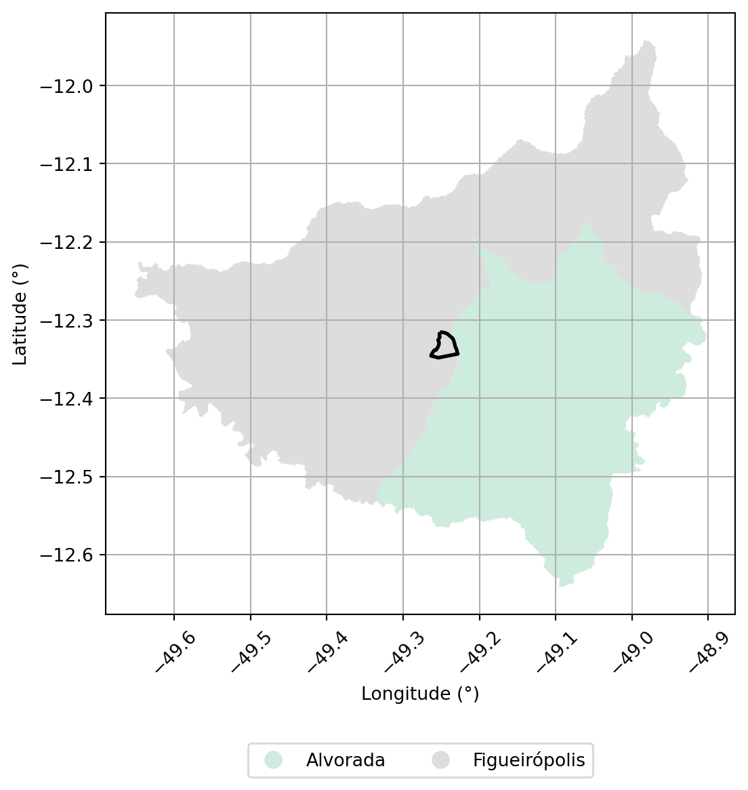
| Estado | Código do Município | Nome do Município |
|---|---|---|
| TO | 1700707 | Alvorada |
| TO | 1707652 | Figueirópolis |
74.1.2 Unidades de Conservação
Não há sobreposição
74.1.3 Terras Indígenas
Não há sobreposição
74.1.4 Projetos de Assentamento
Não há sobreposição
74.1.5 Território Quilombola
Não há sobreposição
74.1.6 SIGEF
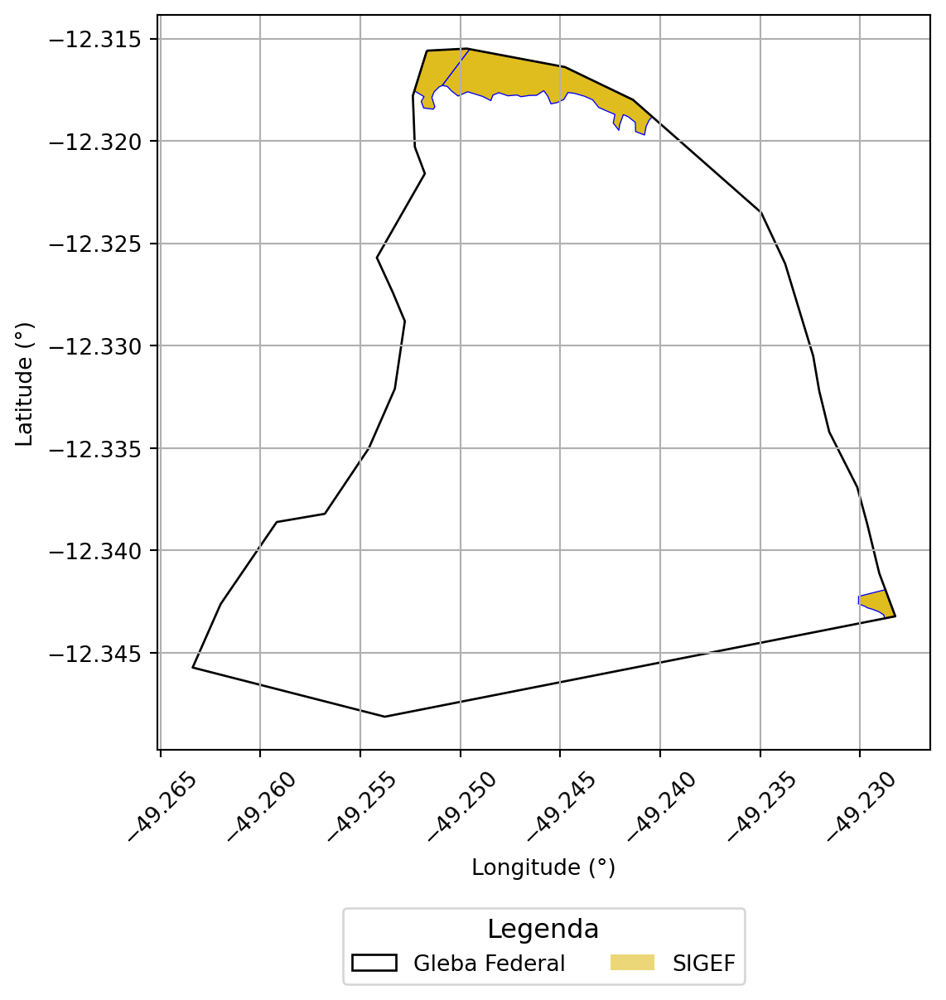
| Código SIGEF | Natureza do Polígono | Área Sobreposta (ha) |
|---|---|---|
| 3fa8fa89-1d46-493d-b56d-5c0c55552fe4 | Particular | 4.6167 |
| 9d4ae361-3557-4a2f-9544-03bb9a79619d | Particular | 1.7184 |
| 3e0dbad6-9ff4-4ad1-9a47-0f9cdbe6cbc1 | Particular | 18.4248 |
74.1.7 SNCI
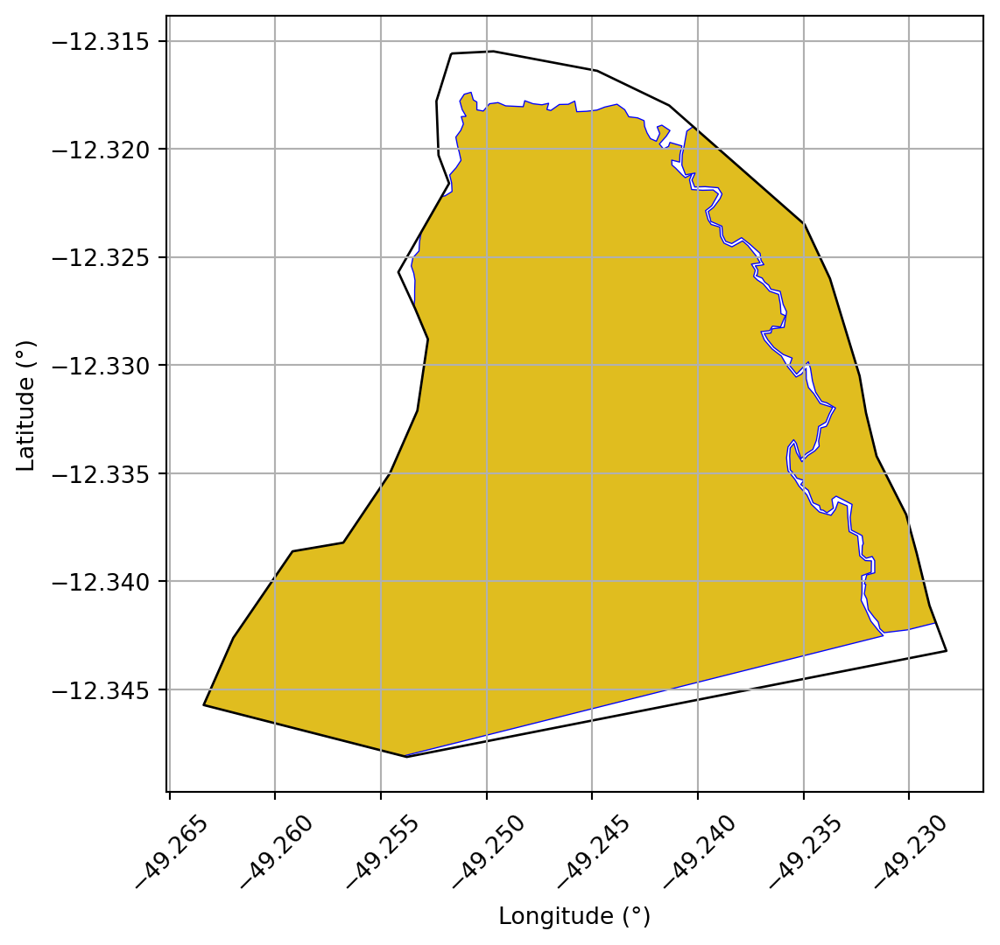
| Código SNCI | Área Sobreposta (ha) |
|---|---|
| 261005000010-80 | 667.1066 |
| 261301000045-47 | 79.1291 |
74.2 Gleba Analisada: LOTE 08-I, GLEBA CAJUEIRO
| Nome da Gleba | Área (ha) |
|---|---|
| LOTE 08-I, GLEBA CAJUEIRO | 1210.8034 |
74.2.1 Abrangência Municipal
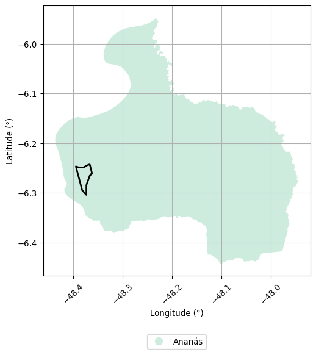
| Estado | Código do Município | Nome do Município |
|---|---|---|
| TO | 1701002 | Ananás |
74.2.2 Unidades de Conservação
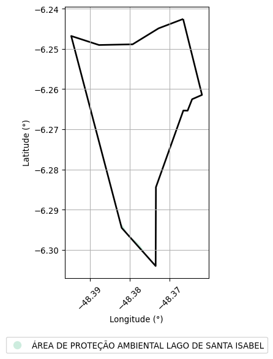
| Nome | Categoria | Responsabilidade | Área Sobreposta (ha) |
|---|---|---|---|
| ÁREA DE PROTEÇÃO AMBIENTAL LAGO DE SANTA ISABEL | Área de Proteção Ambiental | Estadual | 3.6357 |
74.2.3 Terras Indígenas
Não há sobreposição
74.2.4 Projetos de Assentamento
Não há sobreposição
74.2.5 Território Quilombola
Não há sobreposição
74.2.6 SIGEF
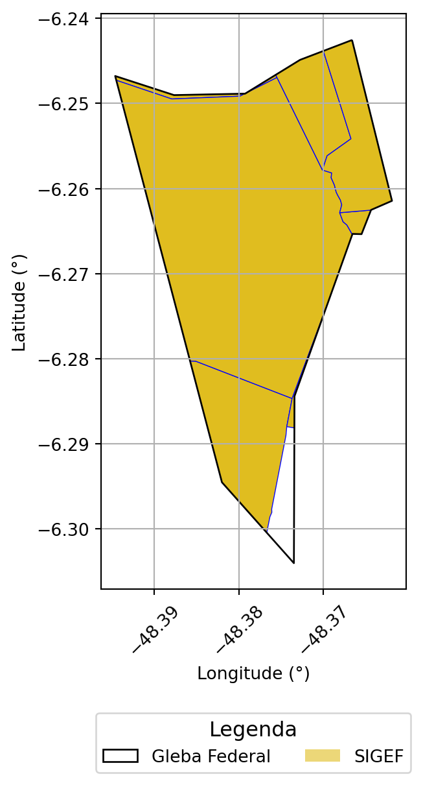
| Código SIGEF | Natureza do Polígono | Área Sobreposta (ha) |
|---|---|---|
| 867d3018-051d-4979-8e4e-d7295b56ae23 | Particular | 8.6813 |
| 38b9351b-7821-420e-b5dd-e5bdd68ceaa4 | Particular | 160.5786 |
| 78987192-11b6-42b1-ab84-bbffab32a8f0 | Particular | 814.9149 |
| 739a5b3a-3e06-4d3d-a65b-5aa83852314d | Particular | 3.7367 |
| 3c9753e5-3b8d-4b52-916f-b4e3246ce0de | Particular | 8.1185 |
| 0ea009e6-d1d3-44bb-b441-d8116d05c807 | Particular | 76.0899 |
| 9bbbbb9f-51fe-478e-99c1-2e669c5b9238 | Particular | 106.8721 |
74.2.7 SNCI
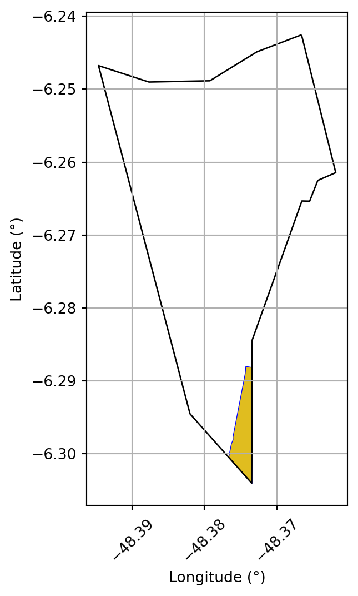
| Código SNCI | Área Sobreposta (ha) |
|---|---|
| 260610000012-48 | 37.6071 |
74.3 Gleba Analisada: LOTE 09
| Nome da Gleba | Área (ha) |
|---|---|
| LOTE 09 | 1236.9273 |
74.3.1 Abrangência Municipal
| Estado | Código do Município | Nome do Município |
|---|---|---|
| TO | 1711902 | Lagoa da Confusão |
74.3.2 Unidades de Conservação
Não há sobreposição
74.3.3 Terras Indígenas
Não há sobreposição
74.3.4 Projetos de Assentamento
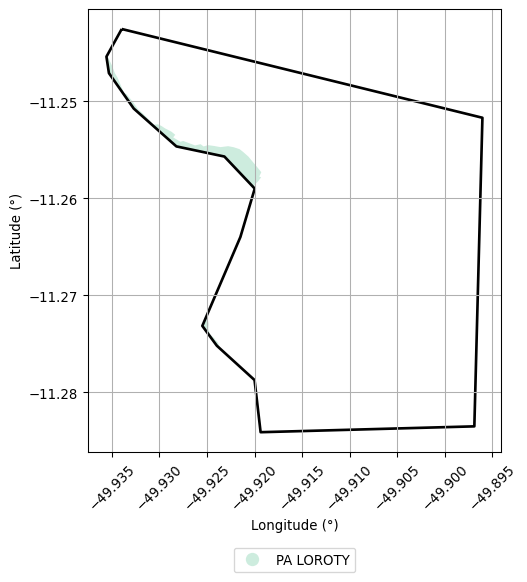
| SIPRA | Nome | Município | Área Sobreposta (ha) |
|---|---|---|---|
| TO0087000 | PA LOROTY | LAGOA DA CONFUSAO | 20.5166 |
74.3.5 Território Quilombola
Não há sobreposição
74.3.6 SIGEF
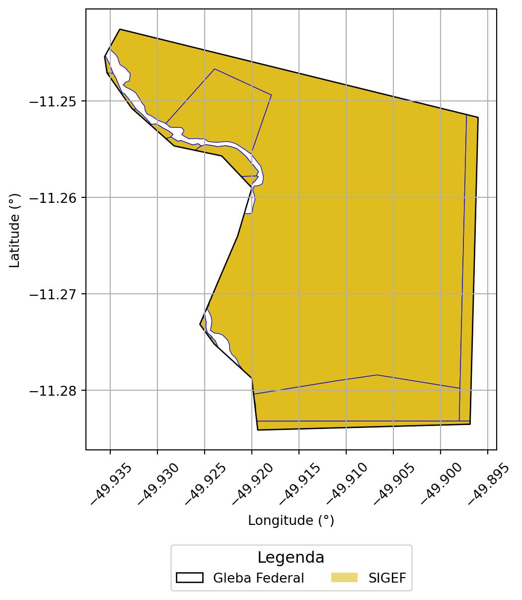
| Código SIGEF | Natureza do Polígono | Área Sobreposta (ha) |
|---|---|---|
| cc88ce06-3362-4e25-9c7e-7fd9e72d8101 | Assentamento | 20.5166 |
| c072eec1-02b0-4e97-92cb-d44da3392841 | Assentamento Parcela | 0.7560 |
| 13434b47-a685-41ea-b1c6-4cd9388af892 | Assentamento Parcela | 0.5838 |
| d4ce34cb-0522-4fa8-958f-8002f43edf54 | Assentamento Parcela | 1.7281 |
| 3cacdd39-ad20-463e-95a7-9e16e0ecb373 | Assentamento Parcela | 2.4270 |
| 30bfe32b-de85-47f9-9d66-143988f144d7 | Assentamento Parcela | 10.6555 |
| a618c6e5-174c-4530-9837-445f3be5b215 | Assentamento Parcela | 1.2046 |
| d94a4ad4-bd78-4cc1-b371-1b21e25ba705 | Assentamento Parcela | 1.0065 |
| 596397a4-b08b-4598-8d51-cef868ad82ef | Assentamento Parcela | 0.8341 |
| b60aac2c-39a9-4ae9-b2a7-b8096908243c | Assentamento Parcela | 0.0885 |
| 8bdd26c5-9c4b-4385-acb1-e945db69852b | Assentamento Parcela | 0.9279 |
| 3235a561-271d-4a23-aa38-12526c14cff8 | Assentamento Parcela | 0.3043 |
| 016b817f-fd6a-4291-bb33-61e9bb7d8c82 | Gleba Pública | 17.0940 |
| efe85707-7287-44da-89c1-db52a727a322 | Particular | 17.0940 |
| f44790f7-75ab-4129-945a-f2813764cdac | Particular | 45.8004 |
| 72af2b2d-57f3-42bf-86f9-c3de1ac74301 | Particular | 958.9999 |
| 9387c6d6-eb5d-46e3-82f5-b0dbf9a78c09 | Particular | 102.9342 |
| 9c494e4c-4b0f-46ac-b946-1a9b1d5d34de | Particular | 67.1184 |
74.3.7 SNCI
Não há sobreposição
74.4 Gleba Analisada: LOTE 09, LOT. LAGEADO 2 ETAPA
| Nome da Gleba | Área (ha) |
|---|---|
| LOTE 09, LOT. LAGEADO 2 ETAPA | 581.5194 |
74.4.1 Abrangência Municipal
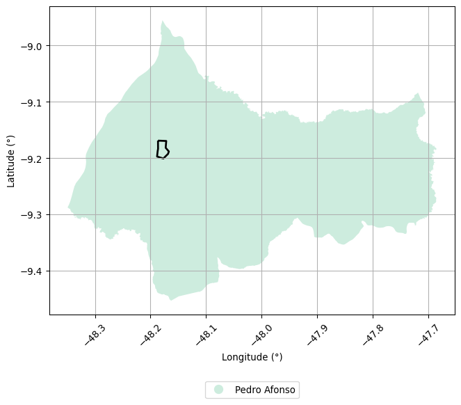
| Estado | Código do Município | Nome do Município |
|---|---|---|
| TO | 1716505 | Pedro Afonso |
74.4.2 Unidades de Conservação
Não há sobreposição
74.4.3 Terras Indígenas
Não há sobreposição
74.4.4 Projetos de Assentamento
Não há sobreposição
74.4.5 Território Quilombola
Não há sobreposição
74.4.6 SIGEF

| Código SIGEF | Natureza do Polígono | Área Sobreposta (ha) |
|---|---|---|
| e11261e0-574f-4063-be17-3f5359e0d0bf | Particular | 22.1746 |
| 33a9fd8e-1a87-4571-ba51-384331a6bb8d | Particular | 193.1244 |
| 3287600c-ba2f-495a-8f3e-f9c194c4ab44 | Particular | 369.1652 |
74.4.7 SNCI
Não há sobreposição
74.5 Gleba Analisada: LOTE 09-I, GLEBA CAJUEIRO
| Nome da Gleba | Área (ha) |
|---|---|
| LOTE 09-I, GLEBA CAJUEIRO | 1448.4502 |
74.5.1 Abrangência Municipal

| Estado | Código do Município | Nome do Município |
|---|---|---|
| TO | 1701002 | Ananás |
74.5.2 Unidades de Conservação
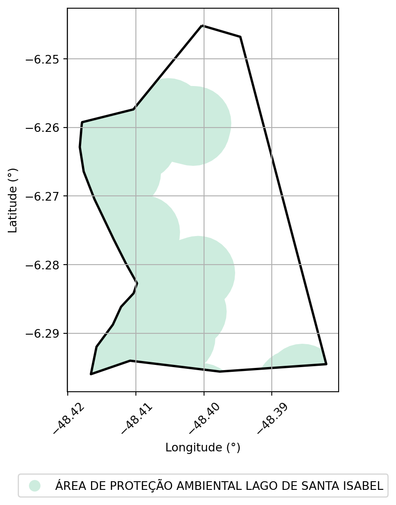
| Nome | Categoria | Responsabilidade | Área Sobreposta (ha) |
|---|---|---|---|
| ÁREA DE PROTEÇÃO AMBIENTAL LAGO DE SANTA ISABEL | Área de Proteção Ambiental | Estadual | 755.4951 |
74.5.3 Terras Indígenas
Não há sobreposição
74.5.4 Projetos de Assentamento
Não há sobreposição
74.5.5 Território Quilombola
Não há sobreposição
74.5.6 SIGEF
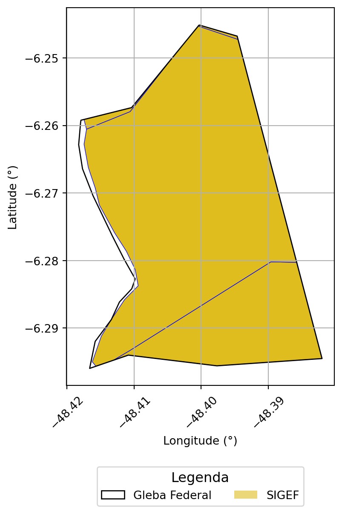
| Código SIGEF | Natureza do Polígono | Área Sobreposta (ha) |
|---|---|---|
| 867d3018-051d-4979-8e4e-d7295b56ae23 | Particular | 12.5325 |
| 38b9351b-7821-420e-b5dd-e5bdd68ceaa4 | Particular | 316.7673 |
| 78987192-11b6-42b1-ab84-bbffab32a8f0 | Particular | 1099.2243 |
74.5.7 SNCI
Não há sobreposição
74.6 Gleba Analisada: LOTE 10
| Nome da Gleba | Área (ha) |
|---|---|
| LOTE 10 | 783.0076 |
74.6.1 Abrangência Municipal
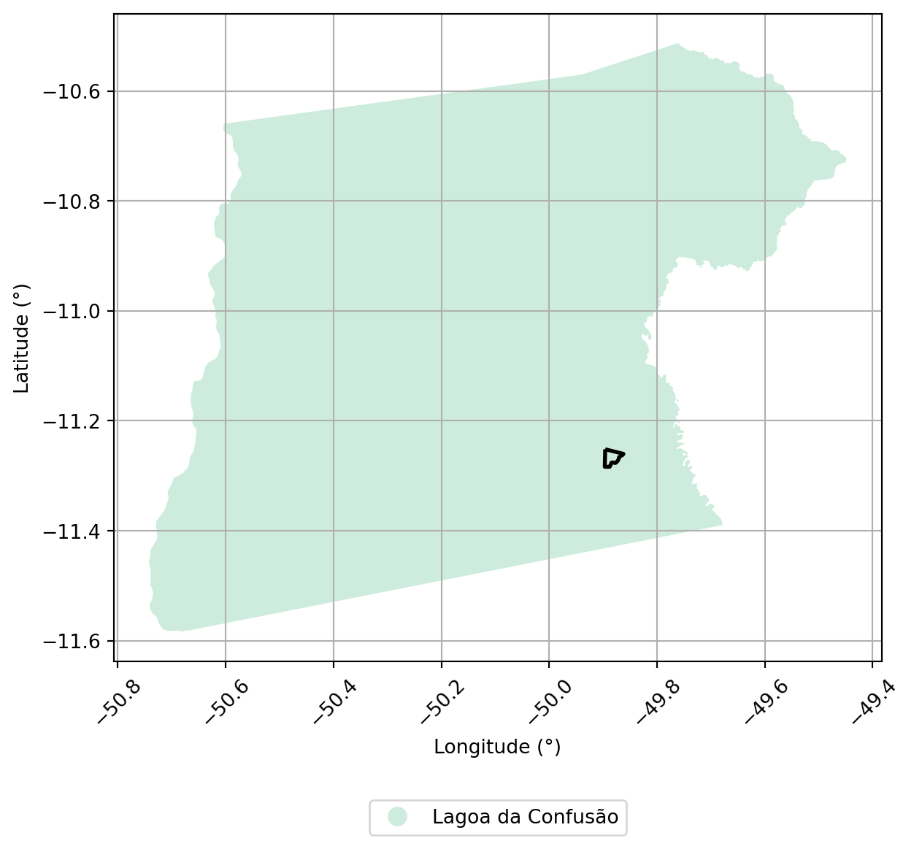
| Estado | Código do Município | Nome do Município |
|---|---|---|
| TO | 1711902 | Lagoa da Confusão |
74.6.2 Unidades de Conservação
Não há sobreposição
74.6.3 Terras Indígenas
Não há sobreposição
74.6.4 Projetos de Assentamento

| SIPRA | Nome | Município | Área Sobreposta (ha) |
|---|---|---|---|
| TO0087000 | PA LOROTY | LAGOA DA CONFUSAO | 8.7286 |
74.6.5 Território Quilombola
Não há sobreposição
74.6.6 SIGEF
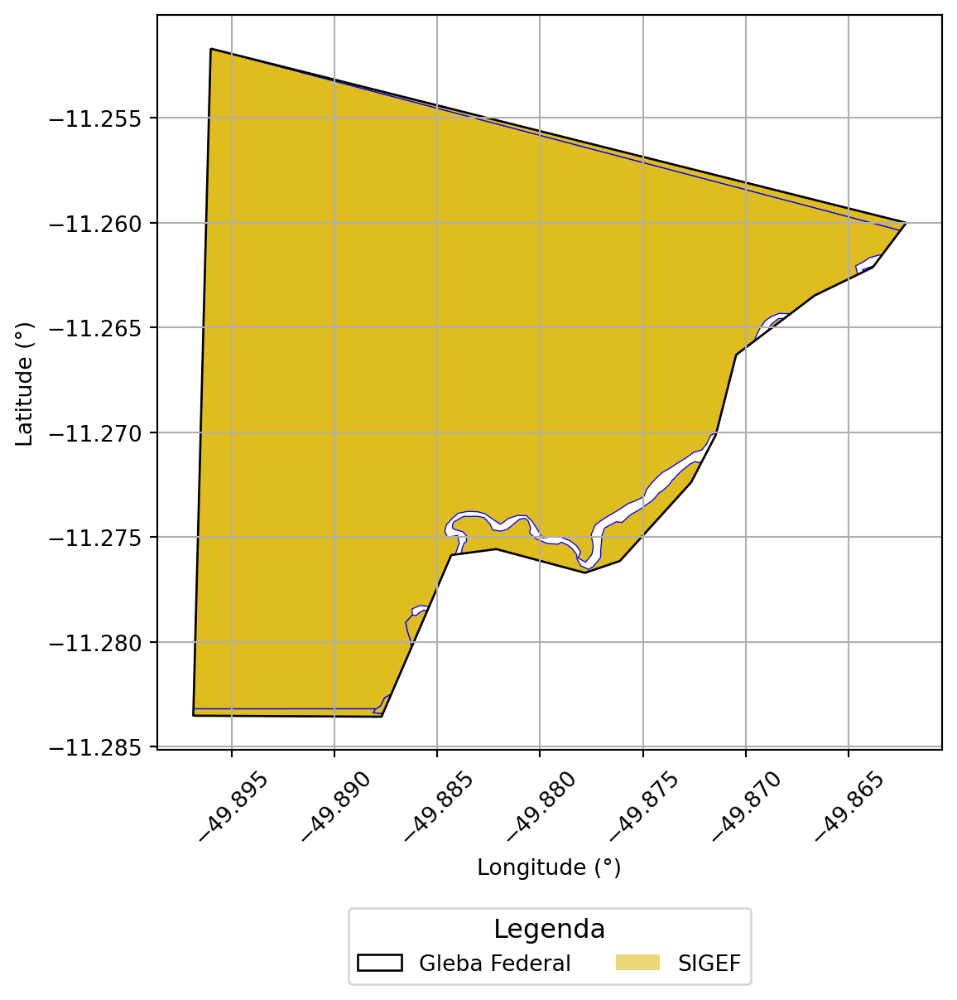
| Código SIGEF | Natureza do Polígono | Área Sobreposta (ha) |
|---|---|---|
| cc88ce06-3362-4e25-9c7e-7fd9e72d8101 | Assentamento | 8.7286 |
| 763483ce-5e26-4ad8-a201-df69cc852832 | Assentamento Parcela | 8.7286 |
| 016b817f-fd6a-4291-bb33-61e9bb7d8c82 | Gleba Pública | 3.8708 |
| 6577ae66-d377-46d7-8e7b-c58a810dbb2c | Particular | 18.2511 |
| f44790f7-75ab-4129-945a-f2813764cdac | Particular | 744.2972 |
| efe85707-7287-44da-89c1-db52a727a322 | Particular | 3.8708 |
74.6.7 SNCI
Não há sobreposição
74.7 Gleba Analisada: LOTE 10, LOT. DESERTO GL1, 1 ETAPA
| Nome da Gleba | Área (ha) |
|---|---|
| LOTE 10, LOT. DESERTO GL1, 1 ETAPA | 370.8516 |
74.7.1 Abrangência Municipal
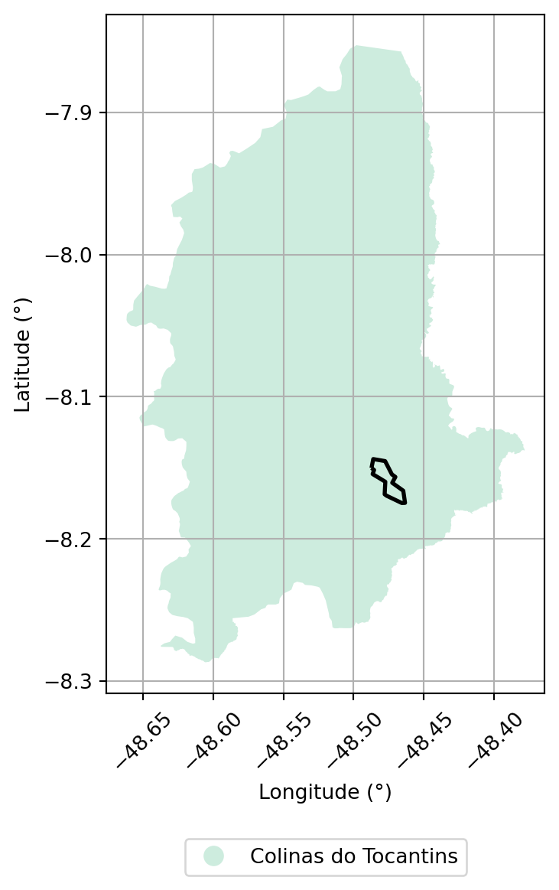
| Estado | Código do Município | Nome do Município |
|---|---|---|
| TO | 1705508 | Colinas do Tocantins |
74.7.2 Unidades de Conservação
Não há sobreposição
74.7.3 Terras Indígenas
Não há sobreposição
74.7.4 Projetos de Assentamento
Não há sobreposição
74.7.5 Território Quilombola
Não há sobreposição
74.7.6 SIGEF
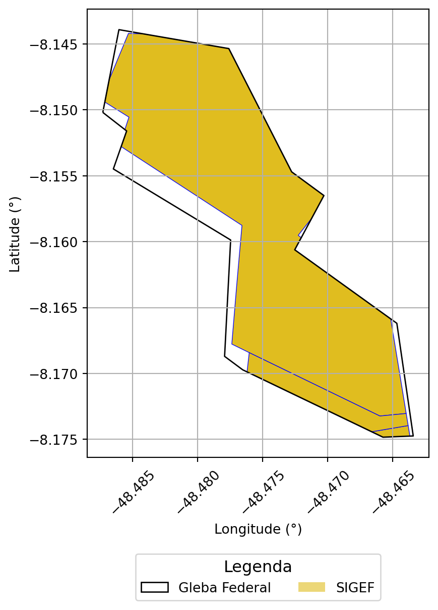
| Código SIGEF | Natureza do Polígono | Área Sobreposta (ha) |
|---|---|---|
| 6a7989b8-1e75-4ec5-b931-6ada8846f86a | Particular | 1.9742 |
| 803736cd-4e10-49c1-b75e-27a49e63b3ac | Particular | 310.7306 |
| c4c1c58a-7601-4b84-9d15-66f70f860e52 | Particular | 21.2546 |
74.7.7 SNCI
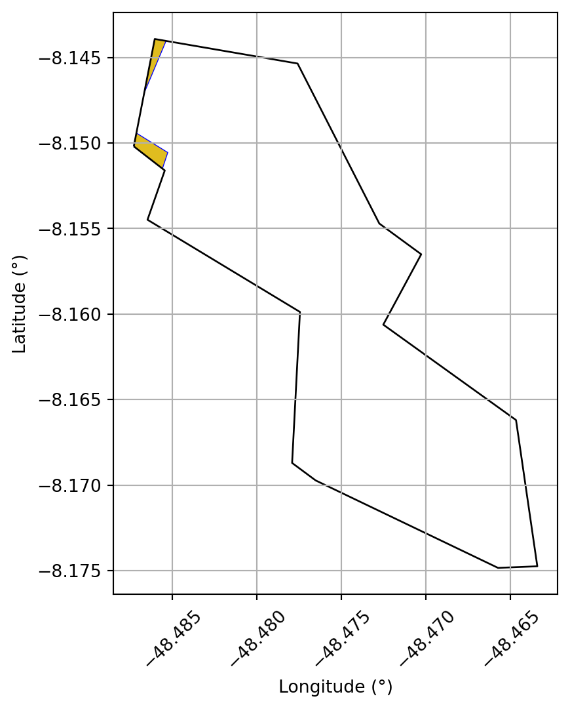
| Código SNCI | Área Sobreposta (ha) |
|---|---|
| 261004000017-20 | 1.3359 |
| 261401000157-24 | 2.2201 |
74.8 Gleba Analisada: LOTE 108, LOT. SANTA LUZIA FOLHA B
| Nome da Gleba | Área (ha) |
|---|---|
| LOTE 108, LOT. SANTA LUZIA FOLHA B | 63.3247 |
74.8.1 Abrangência Municipal
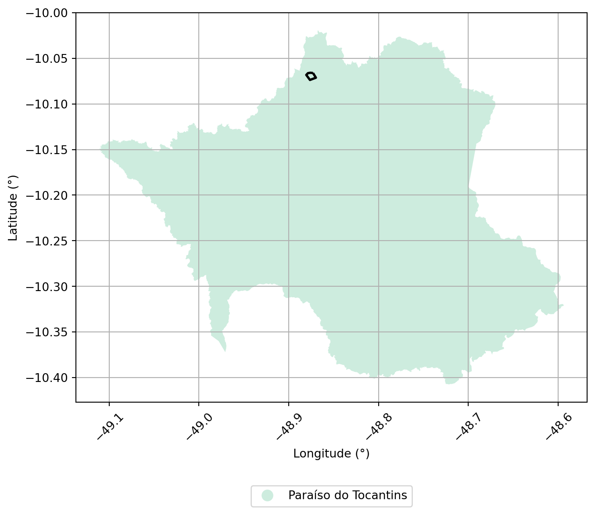
| Estado | Código do Município | Nome do Município |
|---|---|---|
| TO | 1716109 | Paraíso do Tocantins |
74.8.2 Unidades de Conservação
Não há sobreposição
74.8.3 Terras Indígenas
Não há sobreposição
74.8.4 Projetos de Assentamento
Não há sobreposição
74.8.5 Território Quilombola
Não há sobreposição
74.8.6 SIGEF
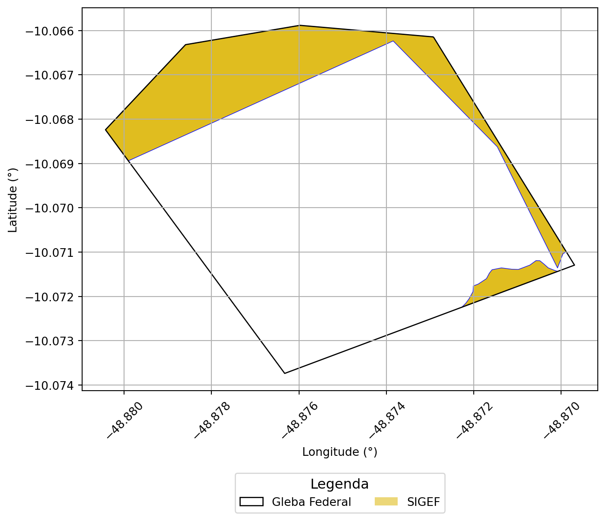
| Código SIGEF | Natureza do Polígono | Área Sobreposta (ha) |
|---|---|---|
| dc48bc01-ea0b-4977-8458-2aff6b723c93 | Particular | 0.9497 |
| 12093cff-fcf7-4d80-a3d9-3d7a1cad3a0a | Particular | 12.7205 |
74.8.7 SNCI
Não há sobreposição
74.9 Gleba Analisada: LOTE 11
| Nome da Gleba | Área (ha) |
|---|---|
| LOTE 11 | 1044.4204 |
74.9.1 Abrangência Municipal

| Estado | Código do Município | Nome do Município |
|---|---|---|
| TO | 1707306 | Dueré |
| TO | 1711902 | Lagoa da Confusão |
74.9.2 Unidades de Conservação
Não há sobreposição
74.9.3 Terras Indígenas
Não há sobreposição
74.9.4 Projetos de Assentamento
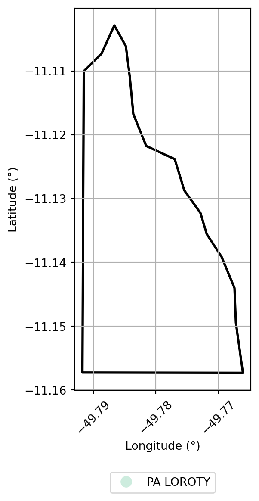
| SIPRA | Nome | Município | Área Sobreposta (ha) |
|---|---|---|---|
| TO0087000 | PA LOROTY | LAGOA DA CONFUSAO | 1.5564 |
74.9.5 Território Quilombola
Não há sobreposição
74.9.6 SIGEF
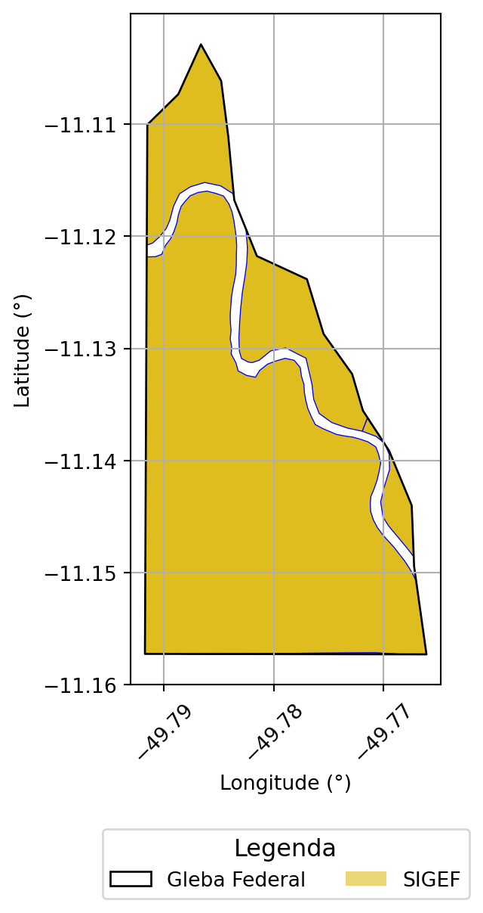
| Código SIGEF | Natureza do Polígono | Área Sobreposta (ha) |
|---|---|---|
| cc88ce06-3362-4e25-9c7e-7fd9e72d8101 | Assentamento | 1.5564 |
| a998480d-5e41-4533-a3db-67c067906fd2 | Assentamento Parcela | 1.5564 |
| 4697c193-7bb4-4783-84f4-106e6b3144a4 | Particular | 777.6858 |
| 5918e8ad-5c92-4ec6-b0e4-3d6c4084400c | Particular | 192.1880 |
| c6d2f34a-99bb-44c1-b144-40e41416193a | Particular | 1.5989 |
| 18b90806-02f1-4123-a505-9064648d9222 | Particular | 16.9722 |
74.9.7 SNCI
Não há sobreposição
74.10 Gleba Analisada: LOTE 11 DOL.FAZENDA SANTO ANTÔNIO, 3-1 ETAPA
| Nome da Gleba | Área (ha) |
|---|---|
| LOTE 11 DOL.FAZENDA SANTO ANTÔNIO, 3-1 ETAPA | 915.7459 |
74.10.1 Abrangência Municipal
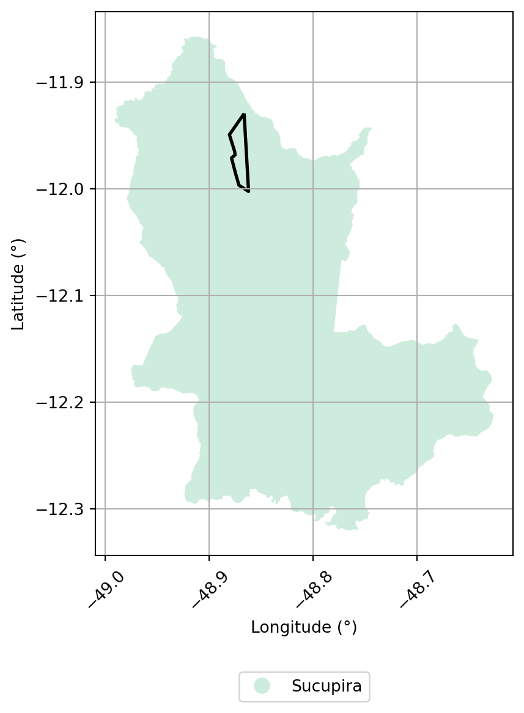
| Estado | Código do Município | Nome do Município |
|---|---|---|
| TO | 1720853 | Sucupira |
74.10.2 Unidades de Conservação
Não há sobreposição
74.10.3 Terras Indígenas
Não há sobreposição
74.10.4 Projetos de Assentamento
Não há sobreposição
74.10.5 Território Quilombola
Não há sobreposição
74.10.6 SIGEF
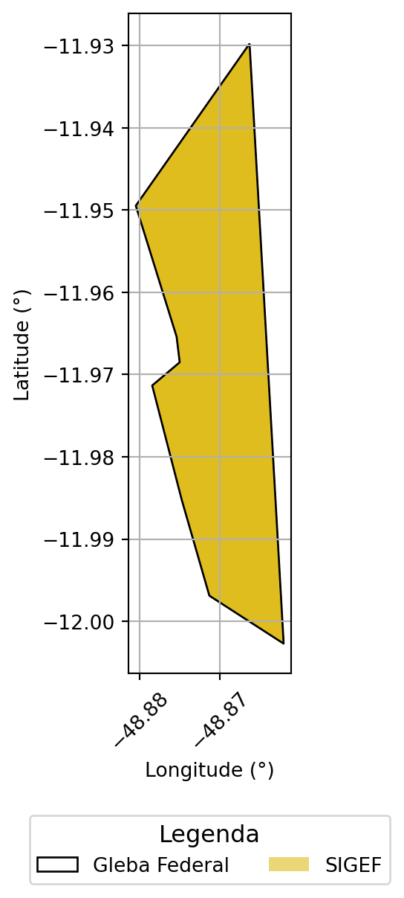
| Código SIGEF | Natureza do Polígono | Área Sobreposta (ha) |
|---|---|---|
| ab98aa99-beb0-4bff-b86f-670646dca74e | Gleba Pública | 919.1754 |
| 78c7ac20-0088-42d5-bdc3-c17049c1a593 | Particular | 919.1754 |
74.10.7 SNCI
Não há sobreposição
74.11 Gleba Analisada: LOTE 11, FAZENDA CASTANHAL, GLEBA DATA CAJUEIRO
| Nome da Gleba | Área (ha) |
|---|---|
| LOTE 11, FAZENDA CASTANHAL, GLEBA DATA CAJUEIRO | 1663.6555 |
74.11.1 Abrangência Municipal
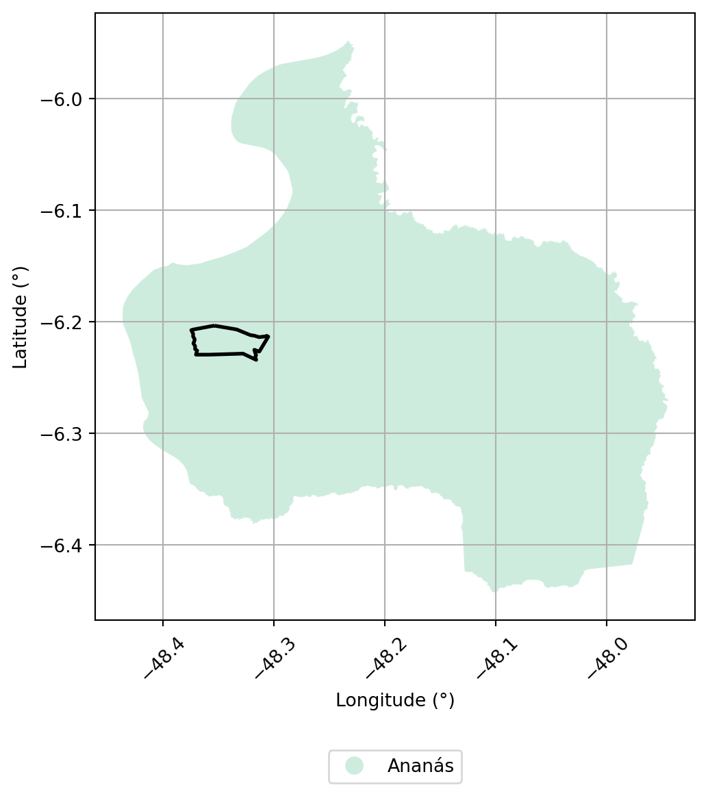
| Estado | Código do Município | Nome do Município |
|---|---|---|
| TO | 1701002 | Ananás |
74.11.2 Unidades de Conservação
Não há sobreposição
74.11.3 Terras Indígenas
Não há sobreposição
74.11.4 Projetos de Assentamento
Não há sobreposição
74.11.5 Território Quilombola
Não há sobreposição
74.11.6 SIGEF
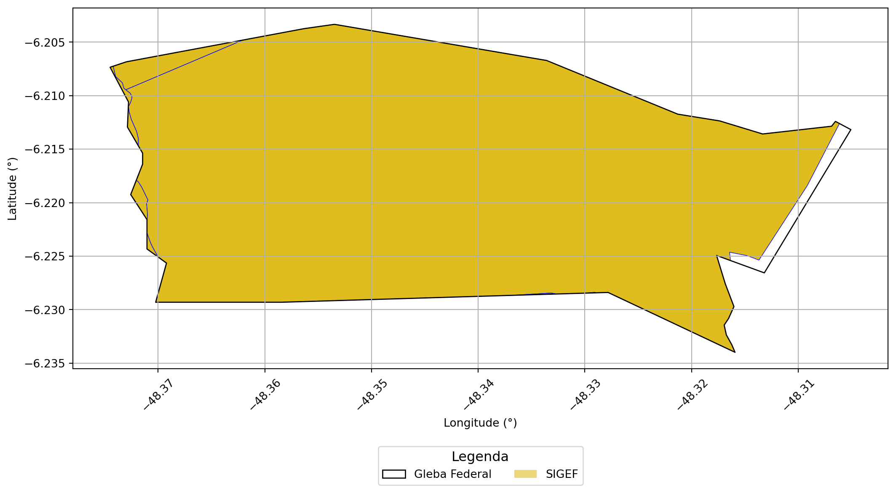
| Código SIGEF | Natureza do Polígono | Área Sobreposta (ha) |
|---|---|---|
| b1dd7926-cd12-4dd5-ba6b-49be9479b426 | Particular | 19.7743 |
| 867d3018-051d-4979-8e4e-d7295b56ae23 | Particular | 4.2910 |
| 82e4fcbf-4882-4ae3-ab09-f820ba4b620a | Particular | 2.9448 |
| a7d22cb7-d2c3-41e8-b860-15cdc41e007e | Particular | 1623.0834 |
| 9bbbbb9f-51fe-478e-99c1-2e669c5b9238 | Particular | 0.3080 |
74.11.7 SNCI
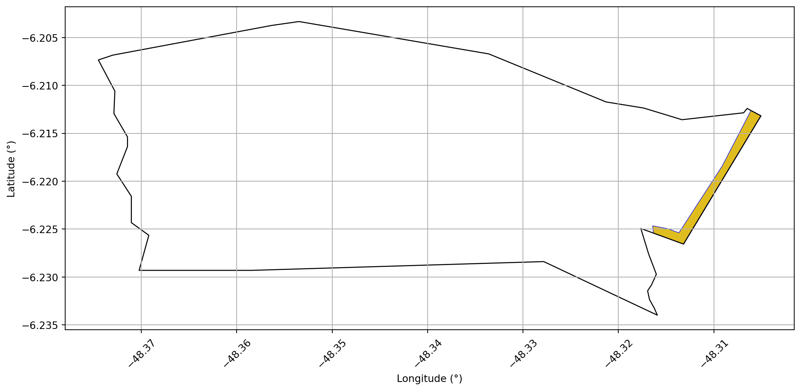
| Código SNCI | Área Sobreposta (ha) |
|---|---|
| 261102000013-24 | 21.3216 |
74.12 Gleba Analisada: LOTE 13, GLEBA CAJUEIRO
| Nome da Gleba | Área (ha) |
|---|---|
| LOTE 13, GLEBA CAJUEIRO | 231.3043 |
74.12.1 Abrangência Municipal
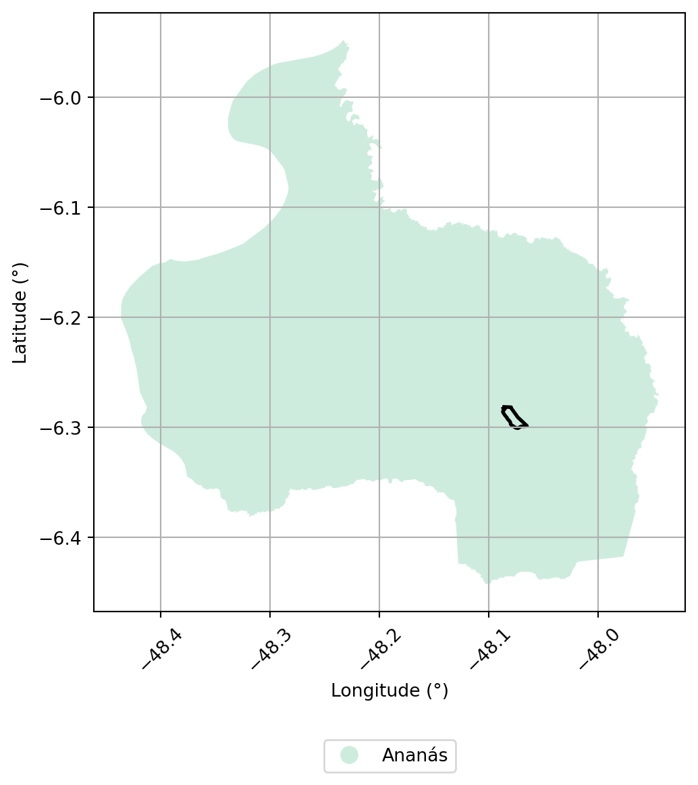
| Estado | Código do Município | Nome do Município |
|---|---|---|
| TO | 1701002 | Ananás |
74.12.2 Unidades de Conservação
Não há sobreposição
74.12.3 Terras Indígenas
Não há sobreposição
74.12.4 Projetos de Assentamento
Não há sobreposição
74.12.5 Território Quilombola
Não há sobreposição
74.12.6 SIGEF
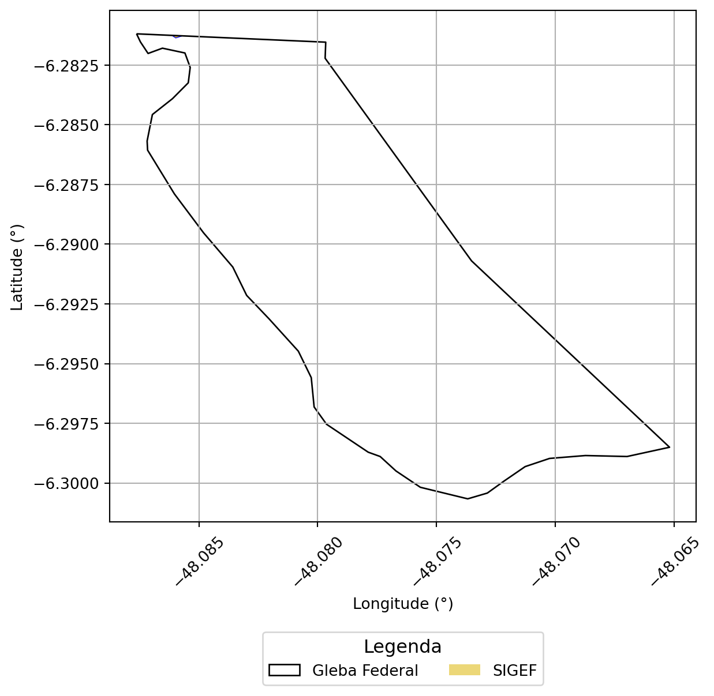
| Código SIGEF | Natureza do Polígono | Área Sobreposta (ha) |
|---|---|---|
| 3b7874f9-df9d-4d1b-9ce0-c2e91b67d97f | Particular | 154.5884 |
| 4cf0db6a-28e9-4c7d-a285-0714c25fd8a8 | Particular | 51.9635 |
| e6548449-db57-4af6-b1ce-155e6f37d71b | Particular | 0.0216 |
74.12.7 SNCI
Não há sobreposição
74.13 Gleba Analisada: LOTE 13, LOT. BREJÃO DO BARREIRO
| Nome da Gleba | Área (ha) |
|---|---|
| LOTE 13, LOT. BREJÃO DO BARREIRO | 77.1844 |
74.13.1 Abrangência Municipal
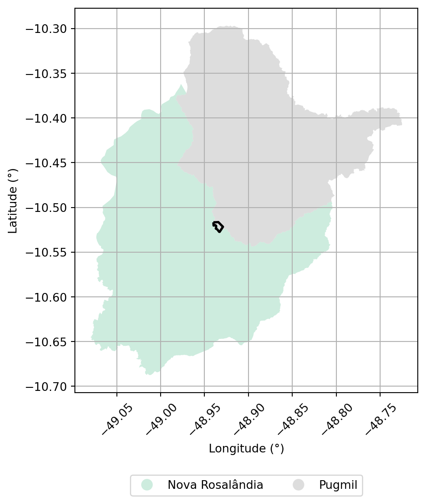
| Estado | Código do Município | Nome do Município |
|---|---|---|
| TO | 1715002 | Nova Rosalândia |
| TO | 1718451 | Pugmil |
74.13.2 Unidades de Conservação
Não há sobreposição
74.13.3 Terras Indígenas
Não há sobreposição
74.13.4 Projetos de Assentamento
Não há sobreposição
74.13.5 Território Quilombola
Não há sobreposição
74.13.6 SIGEF
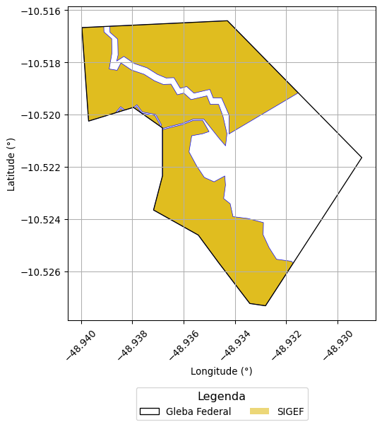
| Código SIGEF | Natureza do Polígono | Área Sobreposta (ha) |
|---|---|---|
| 537a11ed-b723-4149-9c3c-fb0fca5b744b | Particular | 11.1091 |
| c457ee40-6509-4db8-8f5c-f007e6140287 | Particular | 17.4710 |
| 281cd0f9-617e-477c-b4f0-7ac9400b2ec1 | Particular | 18.6569 |
74.13.7 SNCI
Não há sobreposição
74.14 Gleba Analisada: LOTE 13, LOT. DESERTO GL1, 1 ETAPA
| Nome da Gleba | Área (ha) |
|---|---|
| LOTE 13, LOT. DESERTO GL1, 1 ETAPA | 347.8863 |
74.14.1 Abrangência Municipal
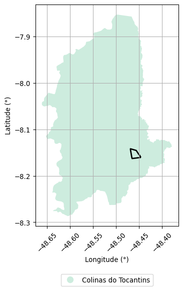
| Estado | Código do Município | Nome do Município |
|---|---|---|
| TO | 1705508 | Colinas do Tocantins |
74.14.2 Unidades de Conservação
Não há sobreposição
74.14.3 Terras Indígenas
Não há sobreposição
74.14.4 Projetos de Assentamento
Não há sobreposição
74.14.5 Território Quilombola
Não há sobreposição
74.14.6 SIGEF
Não há sobreposição
74.14.7 SNCI
Não há sobreposição
74.15 Gleba Analisada: LOTE 138, LOT. SANTA LUZIA FL B
| Nome da Gleba | Área (ha) |
|---|---|
| LOTE 138, LOT. SANTA LUZIA FL B | 309.1590 |
74.15.1 Abrangência Municipal
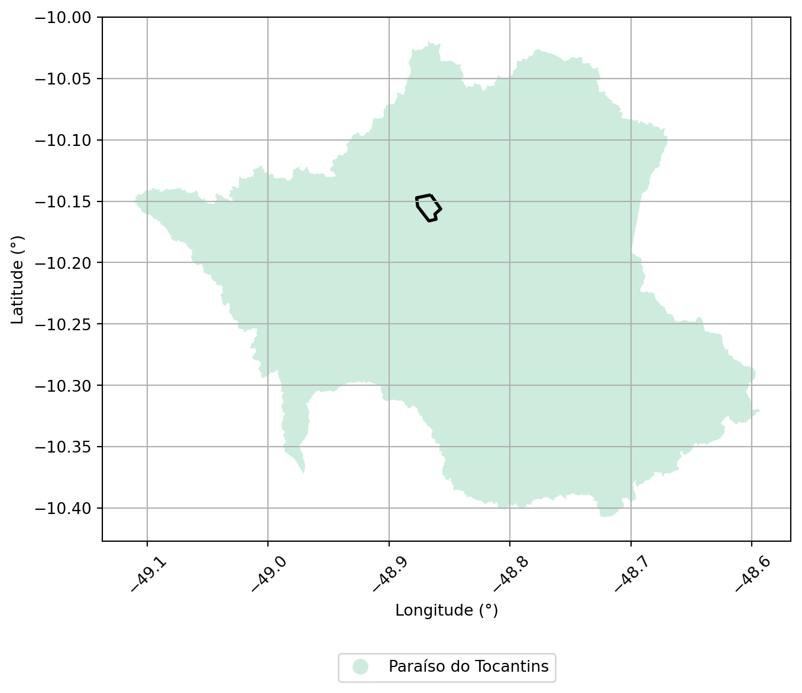
| Estado | Código do Município | Nome do Município |
|---|---|---|
| TO | 1716109 | Paraíso do Tocantins |
74.15.2 Unidades de Conservação
Não há sobreposição
74.15.3 Terras Indígenas
Não há sobreposição
74.15.4 Projetos de Assentamento
Não há sobreposição
74.15.5 Território Quilombola
Não há sobreposição
74.15.6 SIGEF
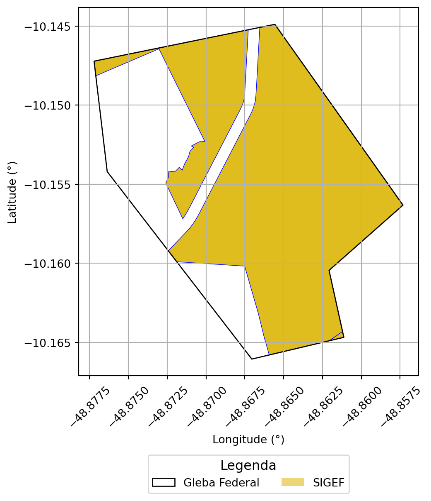
| Código SIGEF | Natureza do Polígono | Área Sobreposta (ha) |
|---|---|---|
| d79409cf-5e08-44ed-9318-1b30a8d6b448 | Particular | 0.2252 |
| af4cd9c4-2278-4191-b73e-782ab8fedaa6 | Particular | 173.6020 |
| 666bf547-fbd5-4b88-9484-9f1ef0526143 | Particular | 2.5546 |
| 3757eeb3-7db4-4d9d-b258-6d86cdbe405f | Particular | 40.9562 |
74.15.7 SNCI
Não há sobreposição
74.16 Gleba Analisada: LOTE 13A, LOT. DESERTO GL1, 1 ETAPA
| Nome da Gleba | Área (ha) |
|---|---|
| LOTE 13A, LOT. DESERTO GL1, 1 ETAPA | 108.7566 |
74.16.1 Abrangência Municipal
| Estado | Código do Município | Nome do Município |
|---|---|---|
| TO | 1705508 | Colinas do Tocantins |
74.16.2 Unidades de Conservação
Não há sobreposição
74.16.3 Terras Indígenas
Não há sobreposição
74.16.4 Projetos de Assentamento
Não há sobreposição
74.16.5 Território Quilombola
Não há sobreposição
74.16.6 SIGEF
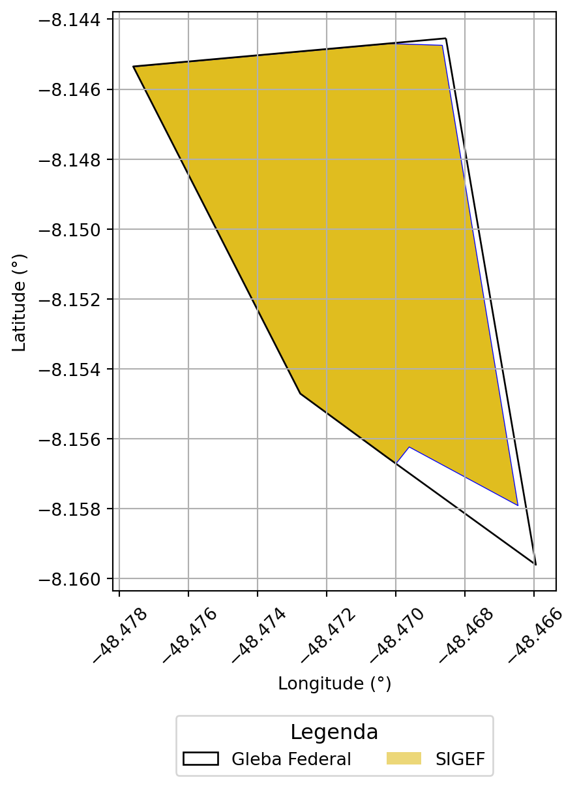
| Código SIGEF | Natureza do Polígono | Área Sobreposta (ha) |
|---|---|---|
| 803736cd-4e10-49c1-b75e-27a49e63b3ac | Particular | 101.1697 |
74.16.7 SNCI
Não há sobreposição
74.17 Gleba Analisada: LOTE 13B, LOT. DESERTO GL1,1 ETAPA
| Nome da Gleba | Área (ha) |
|---|---|
| LOTE 13B, LOT. DESERTO GL1,1 ETAPA | 39.2455 |
74.17.1 Abrangência Municipal
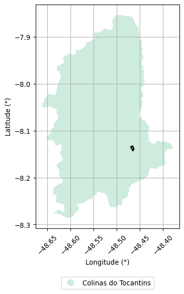
| Estado | Código do Município | Nome do Município |
|---|---|---|
| TO | 1705508 | Colinas do Tocantins |
74.17.2 Unidades de Conservação
Não há sobreposição
74.17.3 Terras Indígenas
Não há sobreposição
74.17.4 Projetos de Assentamento
Não há sobreposição
74.17.5 Território Quilombola
Não há sobreposição
74.17.6 SIGEF

| Código SIGEF | Natureza do Polígono | Área Sobreposta (ha) |
|---|---|---|
| 4ab877b8-e5f7-49e4-af3c-f14113e6e355 | Particular | 0.1427 |
| 0c61501b-03af-41db-b128-ea856277dbe7 | Particular | 39.0964 |
74.17.7 SNCI
Não há sobreposição
74.18 Gleba Analisada: LOTE 14, FAZENDA TAPUIONA DATA CAJUEIRO
| Nome da Gleba | Área (ha) |
|---|---|
| LOTE 14, FAZENDA TAPUIONA DATA CAJUEIRO | 1732.5696 |
74.18.1 Abrangência Municipal
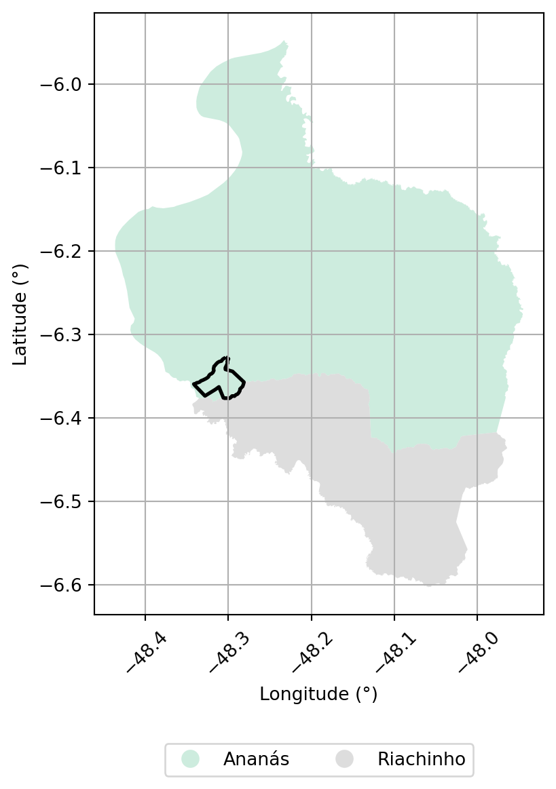
| Estado | Código do Município | Nome do Município |
|---|---|---|
| TO | 1701002 | Ananás |
| TO | 1718550 | Riachinho |
74.18.2 Unidades de Conservação
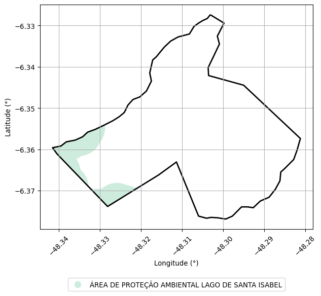
| Nome | Categoria | Responsabilidade | Área Sobreposta (ha) |
|---|---|---|---|
| ÁREA DE PROTEÇÃO AMBIENTAL LAGO DE SANTA ISABEL | Área de Proteção Ambiental | Estadual | 116.7595 |
74.18.3 Terras Indígenas
Não há sobreposição
74.18.4 Projetos de Assentamento
Não há sobreposição
74.18.5 Território Quilombola
Não há sobreposição
74.18.6 SIGEF
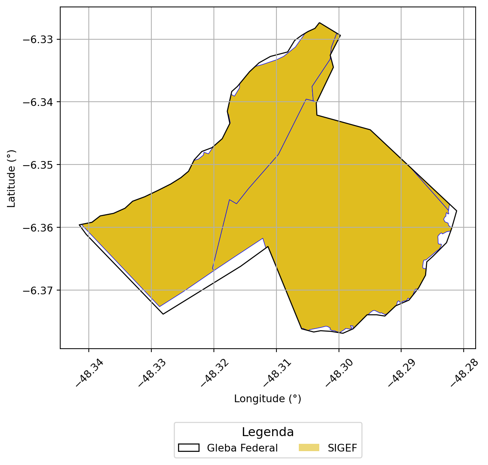
| Código SIGEF | Natureza do Polígono | Área Sobreposta (ha) |
|---|---|---|
| 8483cee0-1b01-421f-839e-abda3145cf7d | Particular | 13.0697 |
| 0ab0f913-2dce-4f6d-93af-05dfb64a11f2 | Particular | 4.4224 |
| 7c98236d-7693-44d3-a3b2-c91c7a8607f6 | Particular | 982.7273 |
| 178fb2f8-10d0-4a8f-8646-e99165d9751e | Particular | 667.0682 |
74.18.7 SNCI
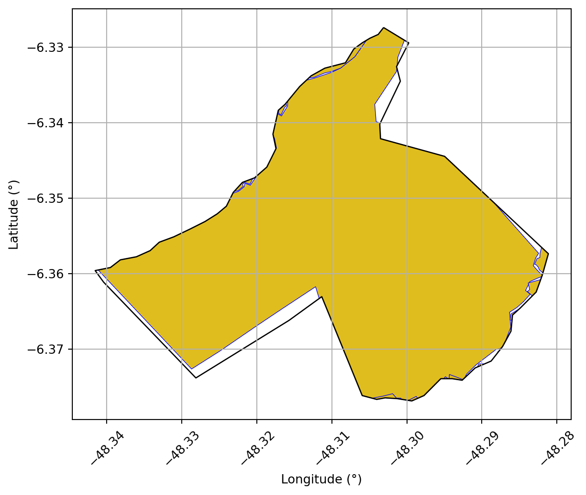
| Código SNCI | Área Sobreposta (ha) |
|---|---|
| 260611000023-27 | 1651.3604 |
| 260901000015-45 | 9.3388 |
| 260610000012-48 | 7.1015 |
74.19 Gleba Analisada: LOTE 14, LOTEAMENTO LAGEADO 2 ETAPA
| Nome da Gleba | Área (ha) |
|---|---|
| LOTE 14, LOTEAMENTO LAGEADO 2 ETAPA | 311.3508 |
74.19.1 Abrangência Municipal
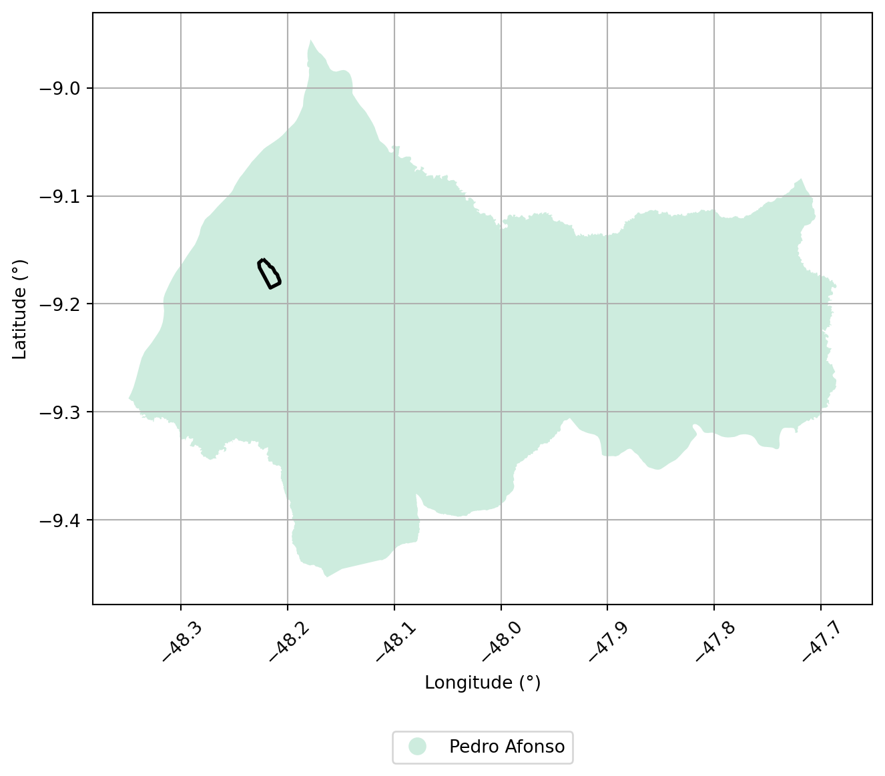
| Estado | Código do Município | Nome do Município |
|---|---|---|
| TO | 1716505 | Pedro Afonso |
74.19.2 Unidades de Conservação
Não há sobreposição
74.19.3 Terras Indígenas
Não há sobreposição
74.19.4 Projetos de Assentamento
Não há sobreposição
74.19.5 Território Quilombola
Não há sobreposição
74.19.6 SIGEF
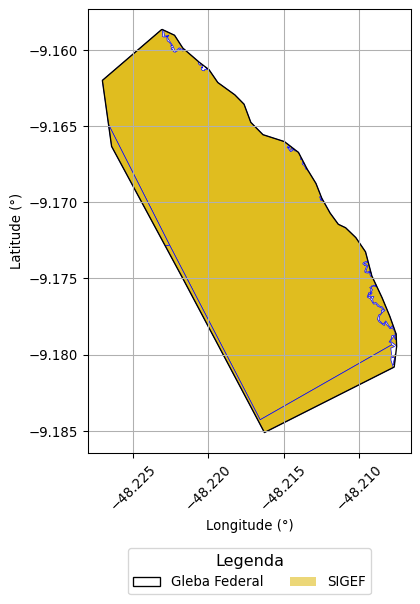
| Código SIGEF | Natureza do Polígono | Área Sobreposta (ha) |
|---|---|---|
| 2a424427-d18a-4028-935c-5405cc0f334b | Particular | 287.8729 |
| e1626395-e659-4a37-a2aa-6b4c28a00e8c | Particular | 0.7893 |
| e1b87ead-5190-453a-beed-5a05a89c3425 | Particular | 3.8482 |
| 3070e507-6574-4d04-94fa-e0d28286a657 | Particular | 16.6203 |
| e11261e0-574f-4063-be17-3f5359e0d0bf | Particular | 2.0690 |
| 60648848-299b-4133-8486-a04c7fe2e648 | Particular | 0.0666 |
74.19.7 SNCI
Não há sobreposição
74.20 Gleba Analisada: LOTE 15, DATA CAJUEIRO
| Nome da Gleba | Área (ha) |
|---|---|
| LOTE 15, DATA CAJUEIRO | 969.2292 |
74.20.1 Abrangência Municipal
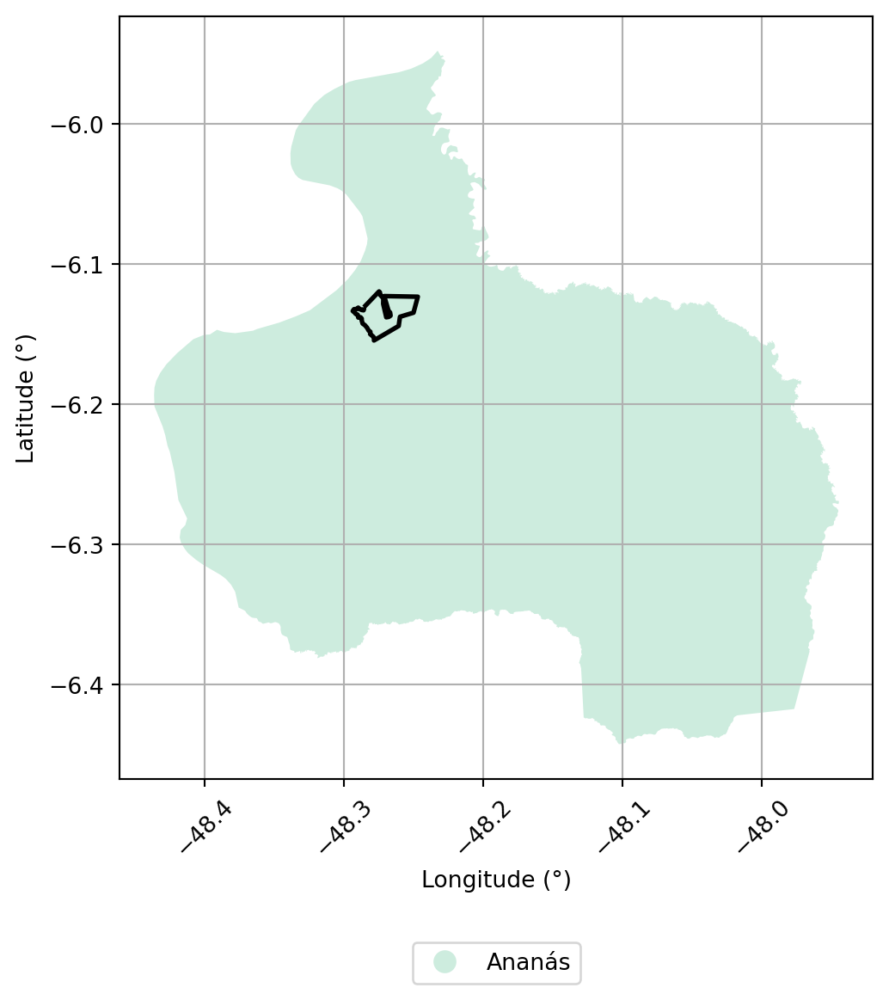
| Estado | Código do Município | Nome do Município |
|---|---|---|
| TO | 1701002 | Ananás |
74.20.2 Unidades de Conservação
Não há sobreposição
74.20.3 Terras Indígenas
Não há sobreposição
74.20.4 Projetos de Assentamento
Não há sobreposição
74.20.5 Território Quilombola
Não há sobreposição
74.20.6 SIGEF
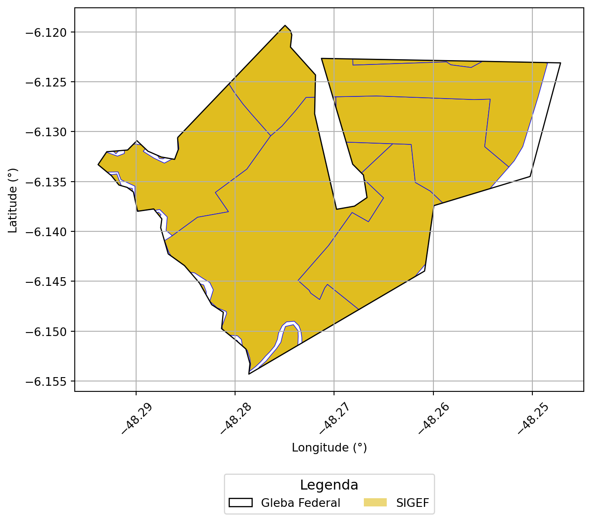
| Código SIGEF | Natureza do Polígono | Área Sobreposta (ha) |
|---|---|---|
| e8c643a1-4335-435a-b7e2-ee244d06cf83 | Particular | 6.2469 |
| dd05f78f-10b0-4f65-a148-cfedd3e9a0f7 | Particular | 0.2886 |
| 263bb53d-9d08-4789-8e8d-8900287ff0cf | Particular | 0.2713 |
| ba30521a-7b69-45f6-96bb-db88627b3079 | Particular | 1.0160 |
| a158bbe1-7039-4098-b58b-a526740a6c15 | Particular | 186.6399 |
| fd9f6e09-7d5b-47fd-ada0-bd3335d8011f | Particular | 6.2834 |
| 23f2fda5-37b8-4cc6-99c1-e4cb27ab752e | Particular | 136.4252 |
| 92f7a3be-0c16-4d94-94b4-1c065864f89b | Particular | 135.1098 |
| b412f8f9-95c1-4c04-81e2-dd27969b4f37 | Particular | 321.8452 |
| ef9005bc-4f79-4401-9c1f-22a71ec088f5 | Particular | 141.8627 |
74.20.7 SNCI
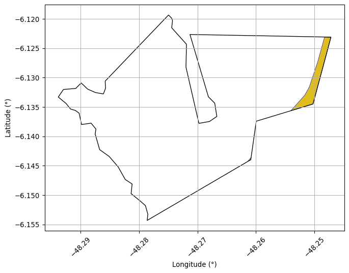
| Código SNCI | Área Sobreposta (ha) |
|---|---|
| 260810000016-33 | 21.6027 |
74.21 Gleba Analisada: LOTE 16, 17 E 18, LOTEAMENTO N 4 - COBERTÃO
| Nome da Gleba | Área (ha) |
|---|---|
| LOTE 16, 17 E 18, LOTEAMENTO N 4 - COBERTÃO | 1915.8140 |
74.21.1 Abrangência Municipal
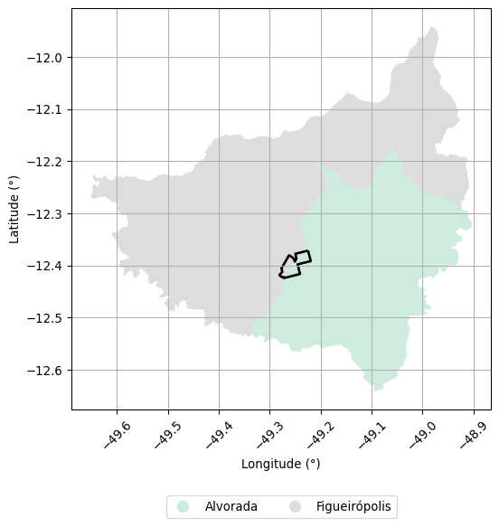
| Estado | Código do Município | Nome do Município |
|---|---|---|
| TO | 1700707 | Alvorada |
| TO | 1707652 | Figueirópolis |
74.21.2 Unidades de Conservação
Não há sobreposição
74.21.3 Terras Indígenas
Não há sobreposição
74.21.4 Projetos de Assentamento
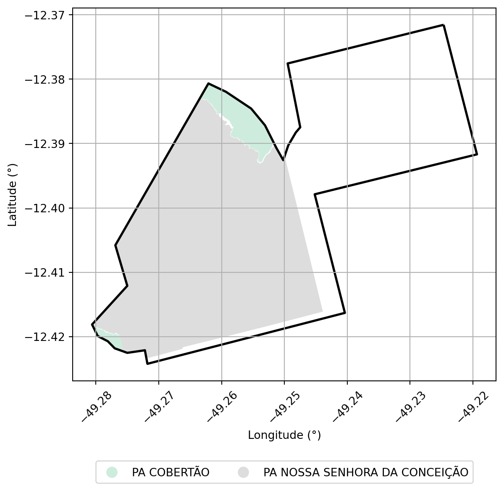
| SIPRA | Nome | Município | Área Sobreposta (ha) |
|---|---|---|---|
| TO0305000 | PA COBERTÃO | FIGUEIROPOLIS | 69.8782 |
| TO0419000 | PA NOSSA SENHORA DA CONCEIÇÃO | FIGUEIROPOLIS | 1046.3155 |
74.21.5 Território Quilombola
Não há sobreposição
74.21.6 SIGEF
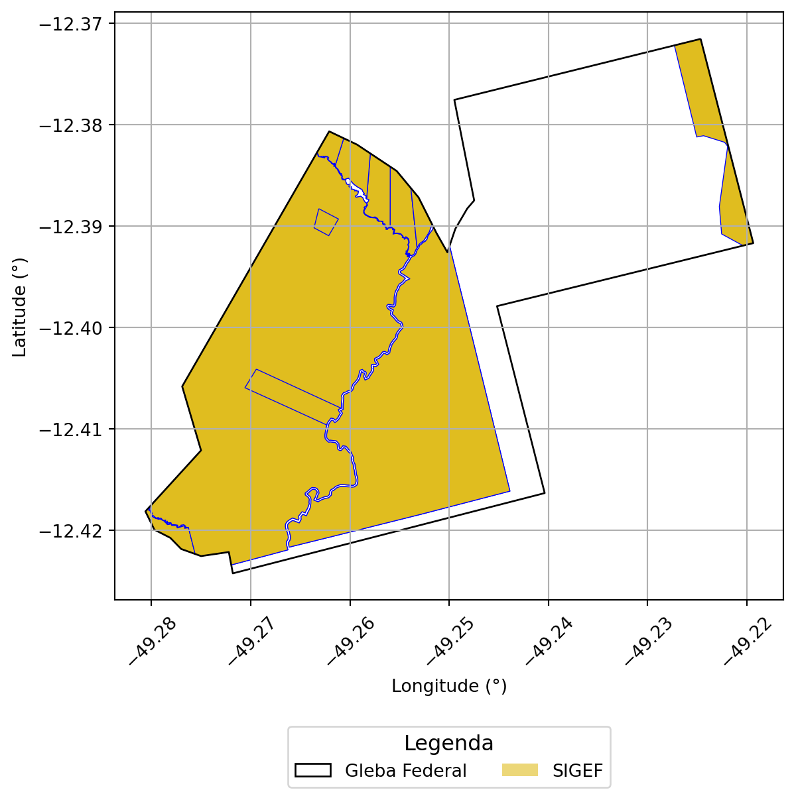
| Código SIGEF | Natureza do Polígono | Área Sobreposta (ha) |
|---|---|---|
| 8e0fda5e-5489-41a4-8614-1310c9cce6f1 | Assentamento | 69.8782 |
| c5c6d4dc-55e2-46fb-81f9-6777a8c4b1f2 | Assentamento | 384.0841 |
| 52a9f56a-9a8d-4c52-8214-3d6d09ab199e | Assentamento | 651.1270 |
| 53d5e613-e8e4-4889-a903-fc2bd58a5d47 | Assentamento Parcela | 25.6779 |
| 510f4eba-ce78-44f4-8d61-b63354a90e10 | Assentamento Parcela | 19.5052 |
| d646138b-45a9-4ce6-82c6-81210dcea314 | Assentamento Parcela | 26.9187 |
| c492cb02-6f33-47ef-9e4a-84368c83b2a1 | Assentamento Parcela | 24.6988 |
| 0513252f-b402-409a-9cbe-c41002180df6 | Assentamento Parcela | 29.1141 |
| 5657d79d-a0dd-4ed5-a2a3-b76f3b9c39b3 | Assentamento Parcela | 21.1179 |
| eca9a96d-be24-4587-addb-10d8bf7b2323 | Assentamento Parcela | 19.2104 |
| c7fa7f17-1c2c-4fb9-8e13-bf985b641801 | Assentamento Parcela | 0.0525 |
| 9698c187-4e90-4e35-a875-bddb4e5c8051 | Assentamento Parcela | 8.4713 |
| 85d529ec-013b-4c33-b20c-2476ac0d9c32 | Assentamento Parcela | 32.1577 |
| 536e67ff-9b3a-4044-8c1f-c81499711ebe | Assentamento Parcela | 22.6529 |
| 617f1689-dead-4f4d-92a2-45f85f4cad25 | Assentamento Parcela | 14.4577 |
| 56e51262-f14e-4ec4-b8f5-c0a2fcf87d22 | Assentamento Parcela | 16.4680 |
| 7222a5be-ce42-4a71-ac0f-343ca3e96889 | Assentamento Parcela | 17.4669 |
| 79e8c483-8bf4-4871-af1e-1b81f34cc6db | Assentamento Parcela | 7.0726 |
| bac8ed5e-f303-446d-8c86-b1855eb52fc7 | Assentamento Parcela | 24.1731 |
| 8f7fd3ed-e07f-40cf-b392-3438a2b535b1 | Assentamento Parcela | 20.2282 |
| 06f10634-e6bc-484f-a210-44a0cadf84a9 | Assentamento Parcela | 12.2763 |
| 5ba35e26-6ee6-4ebf-8b99-05b16640b978 | Assentamento Parcela | 12.5704 |
| 595151e8-63ba-47a1-93e0-3edf904b2188 | Assentamento Parcela | 26.4504 |
| 92e76cd2-f40d-4acb-98b5-c9d2fcf69791 | Assentamento Parcela | 5.8893 |
| 741273d7-8510-44f2-868d-f14b7c1c66ee | Assentamento Parcela | 384.0841 |
| f2687156-192f-4878-80f7-5d8111b4fccc | Assentamento Parcela | 4.4810 |
| ad447b0c-96e3-4498-a647-1560a189100b | Assentamento Parcela | 0.0512 |
| 70dae5d4-9bef-4a89-a0a8-d73c2571c7b2 | Assentamento Parcela | 23.1360 |
| 83ef54ab-f63b-4143-bb89-a6f7e72976ee | Assentamento Parcela | 23.6824 |
| 7367d574-51d0-4ba1-9f57-122e2632790a | Assentamento Parcela | 31.7055 |
| 83b3fa9f-87a4-41e7-9288-27081bb37683 | Assentamento Parcela | 23.7765 |
| b529dfda-08d8-4fe8-a73d-8ee44542de3b | Assentamento Parcela | 14.5687 |
| b9e33282-3c72-413b-a721-e7a0f9b83804 | Assentamento Parcela | 26.2604 |
| 179c4724-f9c9-46b0-8f4a-659ba7c1a9b3 | Assentamento Parcela | 27.7448 |
| d1a9c73d-6303-4faa-985f-cb1f8b1b0056 | Assentamento Parcela | 22.8549 |
| a0fb01d7-6c5b-4332-8389-7cc964e23802 | Assentamento Parcela | 15.6746 |
| 4299957e-ebf9-4fb7-8377-784e34babf4d | Assentamento Parcela | 43.6597 |
| 0c25528a-bf47-4c1e-8678-ad4b16e90420 | Assentamento Parcela | 4.7390 |
| 76127567-5b49-42ac-b682-5f1bbb63ec9c | Assentamento Parcela | 21.2479 |
| 978328a5-0f93-4449-99fd-ec42c0c7b22e | Assentamento Parcela | 21.9950 |
| 3d514f0c-55ee-4a90-9e81-649399bf7143 | Assentamento Parcela | 11.9506 |
| b6c093a4-b264-4556-92b0-050b2bb6179b | Particular | 59.5884 |
| c0597fa6-049d-4794-812d-173ce45a1512 | Particular | 53.7508 |
74.21.7 SNCI
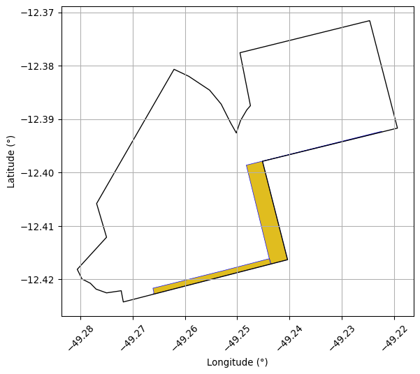
| Código SNCI | Área Sobreposta (ha) |
|---|---|
| 261212000005-10 | 76.1454 |
| 261106000002-87 | 1.2298 |
| 261211000036-90 | 29.2007 |
74.22 Gleba Analisada: LOTE 16, GLEBA REFUGIO OU CURICACAS
| Nome da Gleba | Área (ha) |
|---|---|
| LOTE 16, GLEBA REFUGIO OU CURICACAS | 419.9071 |
74.22.1 Abrangência Municipal
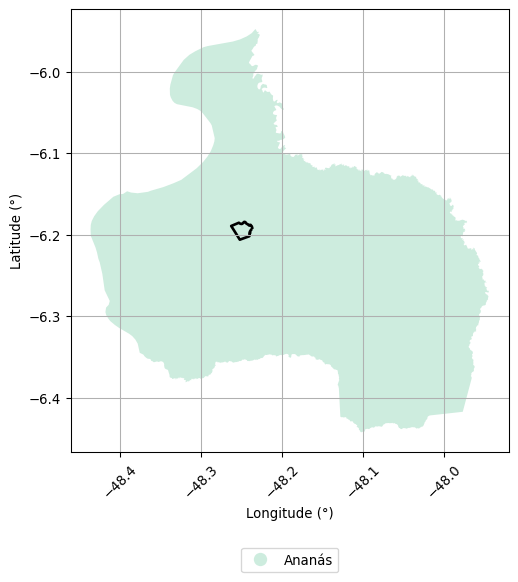
| Estado | Código do Município | Nome do Município |
|---|---|---|
| TO | 1701002 | Ananás |
74.22.2 Unidades de Conservação
Não há sobreposição
74.22.3 Terras Indígenas
Não há sobreposição
74.22.4 Projetos de Assentamento
Não há sobreposição
74.22.5 Território Quilombola
Não há sobreposição
74.22.6 SIGEF
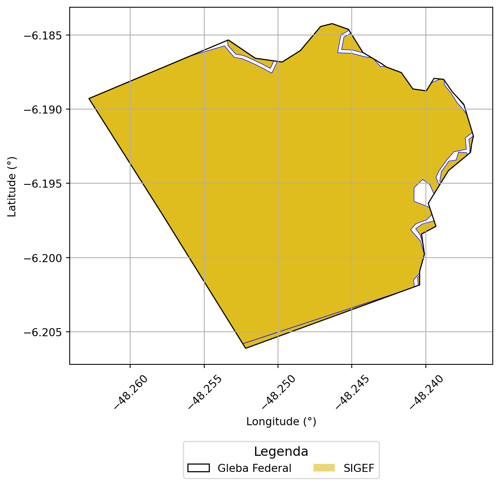
| Código SIGEF | Natureza do Polígono | Área Sobreposta (ha) |
|---|---|---|
| 3ca3d396-95c7-446b-97be-0aaa17fa9fc9 | Particular | 4.5687 |
| ede9982f-7bf2-4d20-a745-950558438f34 | Particular | 2.8546 |
| a4c7ac18-b26a-4bab-a054-45231498b707 | Particular | 406.7742 |
74.22.7 SNCI
| Código SNCI | Área Sobreposta (ha) |
|---|---|
| 260810000016-33 | 0.3950 |
74.23 Gleba Analisada: LOTE 16, LOT. SANTA LUZIA FLS A
| Nome da Gleba | Área (ha) |
|---|---|
| LOTE 16, LOT. SANTA LUZIA FLS A | 270.0434 |
74.23.1 Abrangência Municipal
| Estado | Código do Município | Nome do Município |
|---|---|---|
| TO | 1716109 | Paraíso do Tocantins |
74.23.2 Unidades de Conservação
Não há sobreposição
74.23.3 Terras Indígenas
Não há sobreposição
74.23.4 Projetos de Assentamento
Não há sobreposição
74.23.5 Território Quilombola
Não há sobreposição
74.23.6 SIGEF
| Código SIGEF | Natureza do Polígono | Área Sobreposta (ha) |
|---|---|---|
| cc3030a5-4efb-47d4-ad64-c2c469c829a6 | Particular | 2.0253 |
| e4638bb8-2f69-4955-8382-04df684e6762 | Particular | 18.4944 |
74.23.7 SNCI
Não há sobreposição
74.24 Gleba Analisada: LOTE 18-LOTEAMENTO BOM JARDIM
| Nome da Gleba | Área (ha) |
|---|---|
| LOTE 18-LOTEAMENTO BOM JARDIM | 1107.6521 |
74.24.1 Abrangência Municipal
| Estado | Código do Município | Nome do Município |
|---|---|---|
| TO | 1710508 | Itacajá |
74.24.2 Unidades de Conservação
Não há sobreposição
74.24.3 Terras Indígenas
Não há sobreposição
74.24.4 Projetos de Assentamento
Não há sobreposição
74.24.5 Território Quilombola
Não há sobreposição
74.24.6 SIGEF
| Código SIGEF | Natureza do Polígono | Área Sobreposta (ha) |
|---|---|---|
| a05c0141-721d-45b5-839f-8608a07dcb94 | Gleba Pública | 1114.1502 |
| 1c3459ea-606a-4d08-af75-025644bbe957 | Particular | 78.7026 |
74.24.7 SNCI
Não há sobreposição
74.25 Gleba Analisada: LOTE 19 - LOTEAMENTO SANTA MARIA FOLHA 2
| Nome da Gleba | Área (ha) |
|---|---|
| LOTE 19 - LOTEAMENTO SANTA MARIA FOLHA 2 | 475.9738 |
74.25.1 Abrangência Municipal
| Estado | Código do Município | Nome do Município |
|---|---|---|
| TO | 1703305 | Bom Jesus do Tocantins |
| TO | 1718881 | Santa Maria do Tocantins |
74.25.2 Unidades de Conservação
Não há sobreposição
74.25.3 Terras Indígenas
Não há sobreposição
74.25.4 Projetos de Assentamento
Não há sobreposição
74.25.5 Território Quilombola
Não há sobreposição
74.25.6 SIGEF
| Código SIGEF | Natureza do Polígono | Área Sobreposta (ha) |
|---|---|---|
| 5e0a5a96-6499-46e8-8c2c-58477e6309d6 | Gleba Pública | 478.8929 |
| 5253c1a0-58e1-4ea0-ab40-101c5abc5459 | Particular | 478.8929 |
74.25.7 SNCI
Não há sobreposição
74.26 Gleba Analisada: LOTE 19 DO LOTEAMENTO SANTA MARIA FOLHA 2
| Nome da Gleba | Área (ha) |
|---|---|
| LOTE 19 DO LOTEAMENTO SANTA MARIA FOLHA 2 | 476.0116 |
74.26.1 Abrangência Municipal
| Estado | Código do Município | Nome do Município |
|---|---|---|
| TO | 1703305 | Bom Jesus do Tocantins |
| TO | 1718881 | Santa Maria do Tocantins |
74.26.2 Unidades de Conservação
Não há sobreposição
74.26.3 Terras Indígenas
Não há sobreposição
74.26.4 Projetos de Assentamento
Não há sobreposição
74.26.5 Território Quilombola
Não há sobreposição
74.26.6 SIGEF
| Código SIGEF | Natureza do Polígono | Área Sobreposta (ha) |
|---|---|---|
| 5e0a5a96-6499-46e8-8c2c-58477e6309d6 | Gleba Pública | 478.8929 |
| 5253c1a0-58e1-4ea0-ab40-101c5abc5459 | Particular | 478.8929 |
74.26.7 SNCI
Não há sobreposição
74.27 Gleba Analisada: LOTE 64 - MAT 259
| Nome da Gleba | Área (ha) |
|---|---|
| LOTE 64 - MAT 259 | 839.8629 |
74.27.1 Abrangência Municipal
| Estado | Código do Município | Nome do Município |
|---|---|---|
| TO | 1706001 | Couto Magalhães |
74.27.2 Unidades de Conservação
Não há sobreposição
74.27.3 Terras Indígenas
Não há sobreposição
74.27.4 Projetos de Assentamento
Não há sobreposição
74.27.5 Território Quilombola
Não há sobreposição
74.27.6 SIGEF
| Código SIGEF | Natureza do Polígono | Área Sobreposta (ha) |
|---|---|---|
| 69cfe883-e998-4c81-813d-2bf1096061b2 | Particular | 2.5459 |
| 2adc0b5d-f7e9-467c-8a3d-726885439b4b | Particular | 0.9365 |
| a8618744-802d-48c7-9b73-9843f8a068ef | Particular | 1.5179 |
| aa21fd54-c394-46f2-860a-ce868abeff2f | Particular | 11.2359 |
| 9c17f4ef-bd9e-4752-8871-7fff48977a49 | Particular | 1.1253 |
| b6198bb9-6b4c-42b4-a76d-66229dd54a14 | Particular | 4.3618 |
| caa78068-5d5d-4587-9f27-632e35f3feb1 | Particular | 12.2240 |
| 131cf4ef-af15-495e-9652-f1fdbe772433 | Particular | 776.8044 |
| 7496e15b-d58c-4c88-b8ca-103ba439ada1 | Particular | 3.7736 |
74.27.7 SNCI
| Código SNCI | Área Sobreposta (ha) |
|---|---|
| 261301000114-03 | 28.1109 |
74.28 Gleba Analisada: LOTE 74 - MAT 259
| Nome da Gleba | Área (ha) |
|---|---|
| LOTE 74 - MAT 259 | 61.2965 |
74.28.1 Abrangência Municipal
| Estado | Código do Município | Nome do Município |
|---|---|---|
| TO | 1706001 | Couto Magalhães |
74.28.2 Unidades de Conservação
Não há sobreposição
74.28.3 Terras Indígenas
Não há sobreposição
74.28.4 Projetos de Assentamento
Não há sobreposição
74.28.5 Território Quilombola
Não há sobreposição
74.28.6 SIGEF
| Código SIGEF | Natureza do Polígono | Área Sobreposta (ha) |
|---|---|---|
| 9c17f4ef-bd9e-4752-8871-7fff48977a49 | Particular | 57.7283 |
| 131cf4ef-af15-495e-9652-f1fdbe772433 | Particular | 2.2099 |
| 7496e15b-d58c-4c88-b8ca-103ba439ada1 | Particular | 0.0416 |
74.28.7 SNCI
| Código SNCI | Área Sobreposta (ha) |
|---|---|
| 261301000114-03 | 1.5189 |
74.29 Gleba Analisada: LOTE 84 - MAT 259
| Nome da Gleba | Área (ha) |
|---|---|
| LOTE 84 - MAT 259 | 42.6977 |
74.29.1 Abrangência Municipal
| Estado | Código do Município | Nome do Município |
|---|---|---|
| TO | 1706001 | Couto Magalhães |
74.29.2 Unidades de Conservação
Não há sobreposição
74.29.3 Terras Indígenas
Não há sobreposição
74.29.4 Projetos de Assentamento
Não há sobreposição
74.29.5 Território Quilombola
Não há sobreposição
74.29.6 SIGEF

| Código SIGEF | Natureza do Polígono | Área Sobreposta (ha) |
|---|---|---|
| 0056a513-0d0c-4cdb-a9c7-8e47dd46f66b | Particular | 11.4266 |
| 723cd705-12d9-4acf-bda9-cb8ad5a3b0ab | Particular | 1.1410 |
74.29.7 SNCI
Não há sobreposição
74.30 Gleba Analisada: LOTE 85 - MAT 259
| Nome da Gleba | Área (ha) |
|---|---|
| LOTE 85 - MAT 259 | 58.2262 |
74.30.1 Abrangência Municipal
| Estado | Código do Município | Nome do Município |
|---|---|---|
| TO | 1706001 | Couto Magalhães |
74.30.2 Unidades de Conservação
Não há sobreposição
74.30.3 Terras Indígenas
Não há sobreposição
74.30.4 Projetos de Assentamento
Não há sobreposição
74.30.5 Território Quilombola
Não há sobreposição
74.30.6 SIGEF
| Código SIGEF | Natureza do Polígono | Área Sobreposta (ha) |
|---|---|---|
| ae0c1b2c-d5ad-43e6-82b9-c4fe89af1f94 | Particular | 16.9560 |
| 0056a513-0d0c-4cdb-a9c7-8e47dd46f66b | Particular | 1.4492 |
74.30.7 SNCI
Não há sobreposição
74.31 Gleba Analisada: LOTE 86 - MAT 394
| Nome da Gleba | Área (ha) |
|---|---|
| LOTE 86 - MAT 394 | 888.8913 |
74.31.1 Abrangência Municipal
| Estado | Código do Município | Nome do Município |
|---|---|---|
| TO | 1706001 | Couto Magalhães |
74.31.2 Unidades de Conservação
Não há sobreposição
74.31.3 Terras Indígenas
Não há sobreposição
74.31.4 Projetos de Assentamento
Não há sobreposição
74.31.5 Território Quilombola
Não há sobreposição
74.31.6 SIGEF
| Código SIGEF | Natureza do Polígono | Área Sobreposta (ha) |
|---|---|---|
| a1c634e3-f824-4468-aabe-340e7cbc52cc | Particular | 1.7437 |
| ae0c1b2c-d5ad-43e6-82b9-c4fe89af1f94 | Particular | 57.4169 |
| b9e81ba3-7e43-4773-8cec-9c5478c7a1ba | Particular | 159.6699 |
| 0056a513-0d0c-4cdb-a9c7-8e47dd46f66b | Particular | 96.5448 |
| 723cd705-12d9-4acf-bda9-cb8ad5a3b0ab | Particular | 551.7220 |
| 8bfd89ba-7cf7-4993-83a2-fd07871afa4b | Particular | 3.3591 |
74.31.7 SNCI
Não há sobreposição
74.32 Gleba Analisada: LOTE 87 - MAT 259
| Nome da Gleba | Área (ha) |
|---|---|
| LOTE 87 - MAT 259 | 48.7813 |
74.32.1 Abrangência Municipal
| Estado | Código do Município | Nome do Município |
|---|---|---|
| TO | 1706001 | Couto Magalhães |
74.32.2 Unidades de Conservação
Não há sobreposição
74.32.3 Terras Indígenas
Não há sobreposição
74.32.4 Projetos de Assentamento
Não há sobreposição
74.32.5 Território Quilombola
Não há sobreposição
74.32.6 SIGEF
| Código SIGEF | Natureza do Polígono | Área Sobreposta (ha) |
|---|---|---|
| b9e81ba3-7e43-4773-8cec-9c5478c7a1ba | Particular | 17.5459 |
| 8bfd89ba-7cf7-4993-83a2-fd07871afa4b | Particular | 31.3970 |
74.32.7 SNCI
Não há sobreposição
74.33 Gleba Analisada: LOTE09,10,12,13,14,15,16E17,GLEBA01-1 ETAPA,FLSAEB
| Nome da Gleba | Área (ha) |
|---|---|
| LOTE09,10,12,13,14,15,16E17,GLEBA01-1 ETAPA,FLSAEB | 5354.3810 |
74.33.1 Abrangência Municipal
| Estado | Código do Município | Nome do Município |
|---|---|---|
| TO | 1716604 | Peixe |
74.33.2 Unidades de Conservação
Não há sobreposição
74.33.3 Terras Indígenas
Não há sobreposição
74.33.4 Projetos de Assentamento
Não há sobreposição
74.33.5 Território Quilombola
Não há sobreposição
74.33.6 SIGEF
| Código SIGEF | Natureza do Polígono | Área Sobreposta (ha) |
|---|---|---|
| 50436d2b-1655-4b66-ac54-7e101d356747 | Particular | 1.0409 |
| c809863a-9233-4bdf-99f9-983eb68f17d3 | Particular | 24.7052 |
| 0a090297-fd0e-463b-8050-dbaff6e3028d | Particular | 20.8568 |
| dbb24102-ddb6-42fc-b09a-63deabacf03a | Particular | 24.7281 |
| c147cc86-00f0-48ae-9ebf-2def4ef69ceb | Particular | 23.5548 |
| 9809dbc9-83ea-4862-be94-a942a9609a86 | Particular | 48.7290 |
| ccd38616-da85-4ad7-8ff3-2f0e5a8f5d06 | Particular | 110.1222 |
| 21734fa4-abbf-4c04-9536-01ea5f123a29 | Particular | 179.8820 |
| 79421b46-4ad7-4aae-b0e7-753678db5e18 | Particular | 0.1796 |
| 174169ec-5f43-4d67-b339-01db5679c4b6 | Particular | 389.1956 |
| 3ededf2d-a9b7-4667-b43f-331e4e3f06b5 | Particular | 56.3273 |
| c5911db8-254c-47fd-acb0-ff209f5b66e9 | Particular | 698.3980 |
| 5ff0e22e-3ec8-4be3-834f-31f0a931b724 | Particular | 858.5847 |
| 0ce10463-68c8-4492-b7c7-bc520fefcc31 | Particular | 109.0834 |
| 9b1363db-cc01-44c7-9625-608d8db4af0c | Particular | 373.5089 |
| f55946b0-ea45-412d-8748-895453b15317 | Particular | 0.2123 |
| e426a164-d6e7-4aab-b019-77b5c0a12c02 | Particular | 2.4370 |
| f89a47da-408e-4602-89ca-5afcb65235de | Particular | 160.8419 |
| ad52ffdc-be0c-451e-ad56-4ae119fc79a8 | Particular | 493.1345 |
| 4d952266-a52c-4933-b239-965b8d391dcd | Particular | 395.9880 |
| 9268e693-f2fa-431f-9331-2c19712c934d | Particular | 365.0432 |
| 85e1fb74-9b77-4f19-8b00-5581798dac0f | Particular | 45.0928 |
| 59df6444-0a60-4661-84df-214133276eae | Particular | 24.4807 |
| a5f8cde1-cdff-4ab4-95a1-36954d31b4b9 | Particular | 11.6781 |
| bb8aed9c-3095-4631-9611-f5d09cfbbdba | Particular | 352.9837 |
| e04bf95b-2666-46db-9225-f0620603a7ce | Particular | 12.4370 |
| 16996670-3320-4d0b-9f1f-5518c7ec38a3 | Particular | 24.6801 |
| 4cbdefbe-afc9-451e-971f-ddc1ac4cb644 | Particular | 19.9951 |
74.33.7 SNCI
| Código SNCI | Área Sobreposta (ha) |
|---|---|
| 261003000018-84 | 191.3895 |
74.34 Gleba Analisada: LOTE09,LOT. TOCANTINS ESANTATEREZA-TERRENOPORTEIRA
| Nome da Gleba | Área (ha) |
|---|---|
| LOTE09,LOT. TOCANTINS ESANTATEREZA-TERRENOPORTEIRA | 1268.0108 |
74.34.1 Abrangência Municipal
| Estado | Código do Município | Nome do Município |
|---|---|---|
| TO | 1716604 | Peixe |
74.34.2 Unidades de Conservação
Não há sobreposição
74.34.3 Terras Indígenas
Não há sobreposição
74.34.4 Projetos de Assentamento
Não há sobreposição
74.34.5 Território Quilombola
Não há sobreposição
74.34.6 SIGEF
| Código SIGEF | Natureza do Polígono | Área Sobreposta (ha) |
|---|---|---|
| 9ec49d80-3528-450d-aca5-6d9be2afc80e | Particular | 29.3317 |
| e7157b2a-0daf-4ba2-a067-93a82194c50d | Particular | 109.3034 |
| d2cdad07-714a-44c9-9742-3b80a2f1a1a7 | Particular | 37.7132 |
| 5d4032ec-86fb-4c6c-873a-fbc410190137 | Particular | 199.3184 |
| 2e4aa60b-fa6c-42c2-a9b4-1afbd847cbfc | Particular | 19.5662 |
74.34.7 SNCI
| Código SNCI | Área Sobreposta (ha) |
|---|---|
| 260902000018-14 | 5.7785 |
| 261603000001-21 | 562.1744 |
| 261308000065-85 | 7.5632 |
| 260702000010-03 | 86.2177 |
74.35 Gleba Analisada: LOTE1-LOT°DESERTOGL1,1ªETAPA
| Nome da Gleba | Área (ha) |
|---|---|
| LOTE1-LOT°DESERTOGL1,1ªETAPA | 94.3370 |
74.35.1 Abrangência Municipal
| Estado | Código do Município | Nome do Município |
|---|---|---|
| TO | 1703602 | Brasilândia do Tocantins |
| TO | 1705508 | Colinas do Tocantins |
74.35.2 Unidades de Conservação
Não há sobreposição
74.35.3 Terras Indígenas
Não há sobreposição
74.35.4 Projetos de Assentamento
Não há sobreposição
74.35.5 Território Quilombola
Não há sobreposição
74.35.6 SIGEF
| Código SIGEF | Natureza do Polígono | Área Sobreposta (ha) |
|---|---|---|
| 9e826aa8-f582-4e3e-aca4-586382172c3b | Particular | 93.0156 |
74.35.7 SNCI
Não há sobreposição
74.36 Gleba Analisada: LOTE14,LOTEAMENTOTOCANTINSSANTATEREZA-TERRENOARAPO
| Nome da Gleba | Área (ha) |
|---|---|
| LOTE14,LOTEAMENTOTOCANTINSSANTATEREZA-TERRENOARAPO | 32.6191 |
74.36.1 Abrangência Municipal
| Estado | Código do Município | Nome do Município |
|---|---|---|
| TO | 1716604 | Peixe |
74.36.2 Unidades de Conservação
| Nome | Categoria | Responsabilidade | Área Sobreposta (ha) |
|---|---|---|---|
| ÁREA DE PROTEÇÃO AMBIENTAL FOZ DO RIO SANTA TEREZA | Área de Proteção Ambiental | Estadual | 32.7571 |
74.36.3 Terras Indígenas
Não há sobreposição
74.36.4 Projetos de Assentamento
Não há sobreposição
74.36.5 Território Quilombola
Não há sobreposição
74.36.6 SIGEF
| Código SIGEF | Natureza do Polígono | Área Sobreposta (ha) |
|---|---|---|
| 48193b12-1012-4de5-9c77-28d7daa28f2f | Particular | 10.3134 |
| 8bc78682-949e-4c40-9d5d-b12f9a03e1ae | Particular | 22.4429 |
74.36.7 SNCI
Não há sobreposição
74.37 Gleba Analisada: LOTE16-LOT°DESERTOGL1,1ªETAPA
| Nome da Gleba | Área (ha) |
|---|---|
| LOTE16-LOT°DESERTOGL1,1ªETAPA | 230.4914 |
74.37.1 Abrangência Municipal
| Estado | Código do Município | Nome do Município |
|---|---|---|
| TO | 1705508 | Colinas do Tocantins |
| TO | 1715705 | Palmeirante |
74.37.2 Unidades de Conservação
Não há sobreposição
74.37.3 Terras Indígenas
Não há sobreposição
74.37.4 Projetos de Assentamento
Não há sobreposição
74.37.5 Território Quilombola
Não há sobreposição
74.37.6 SIGEF
| Código SIGEF | Natureza do Polígono | Área Sobreposta (ha) |
|---|---|---|
| f4082cd1-1506-4fdf-9f84-1f60e789b6f3 | Particular | 0.6827 |
| 9398d94c-955e-49a4-ab89-3382c5dba3d0 | Particular | 0.2520 |
| 43072369-d4c4-4bc2-96fe-8515563fa386 | Particular | 0.1998 |
| 2f994707-017a-4cc0-8d50-20c934b81352 | Particular | 209.1052 |
| 0cc4fae4-2b1f-42c6-96f3-1e2a5befb301 | Particular | 5.2451 |
74.37.7 SNCI
Não há sobreposição
74.38 Gleba Analisada: LOTE16E17,GLEBA3-2 ETAPA,FLS A E B,LOT SÃO VALÉRIO
| Nome da Gleba | Área (ha) |
|---|---|
| LOTE16E17,GLEBA3-2 ETAPA,FLS A E B,LOT SÃO VALÉRIO | 2410.8707 |
74.38.1 Abrangência Municipal
| Estado | Código do Município | Nome do Município |
|---|---|---|
| TO | 1716604 | Peixe |
74.38.2 Unidades de Conservação
Não há sobreposição
74.38.3 Terras Indígenas
Não há sobreposição
74.38.4 Projetos de Assentamento
Não há sobreposição
74.38.5 Território Quilombola
Não há sobreposição
74.38.6 SIGEF
| Código SIGEF | Natureza do Polígono | Área Sobreposta (ha) |
|---|---|---|
| 70090020-aaf4-4cd6-8f49-4b6b2595e5aa | Particular | 7.1946 |
| d7ccb19e-e9a0-41c0-af00-6672e99440bb | Particular | 162.7963 |
| dfa16617-3515-41c7-9476-5b399ce99219 | Particular | 2106.9340 |
| 344c75f7-d3f5-43f5-9bef-39df37c1fdfe | Particular | 0.8922 |
| e24a34ca-801b-4534-a487-d59a93f0ec43 | Particular | 4.4346 |
74.38.7 SNCI
| Código SNCI | Área Sobreposta (ha) |
|---|---|
| 261004000006-77 | 74.7428 |
| 260508000002-91 | 56.7152 |
74.39 Gleba Analisada: LOTE18,LOT°TOCANTINSESANTATEREZA-TERRENOPORTEIRAS
| Nome da Gleba | Área (ha) |
|---|---|
| LOTE18,LOT°TOCANTINSESANTATEREZA-TERRENOPORTEIRAS | 90.0374 |
74.39.1 Abrangência Municipal
| Estado | Código do Município | Nome do Município |
|---|---|---|
| TO | 1716604 | Peixe |
74.39.2 Unidades de Conservação
Não há sobreposição
74.39.3 Terras Indígenas
Não há sobreposição
74.39.4 Projetos de Assentamento
Não há sobreposição
74.39.5 Território Quilombola
Não há sobreposição
74.39.6 SIGEF
Não há sobreposição
74.39.7 SNCI
| Código SNCI | Área Sobreposta (ha) |
|---|---|
| 260902000018-14 | 35.4050 |
74.40 Gleba Analisada: LOTE18-A-LOT°DESERTOGL11ETAPA
| Nome da Gleba | Área (ha) |
|---|---|
| LOTE18-A-LOT°DESERTOGL11ETAPA | 104.8810 |
74.40.1 Abrangência Municipal
| Estado | Código do Município | Nome do Município |
|---|---|---|
| TO | 1705508 | Colinas do Tocantins |
| TO | 1715705 | Palmeirante |
74.40.2 Unidades de Conservação
Não há sobreposição
74.40.3 Terras Indígenas
Não há sobreposição
74.40.4 Projetos de Assentamento
Não há sobreposição
74.40.5 Território Quilombola
Não há sobreposição
74.40.6 SIGEF
| Código SIGEF | Natureza do Polígono | Área Sobreposta (ha) |
|---|---|---|
| b11390ca-98bb-41be-b047-a907ce2457ff | Particular | 85.8755 |
| 77e94c44-3e11-414c-a7c3-c3a06643598f | Particular | 0.1222 |
| b1a9e27a-8fa5-4d92-b6a1-e3a7ca42a42d | Particular | 0.1079 |
| 43072369-d4c4-4bc2-96fe-8515563fa386 | Particular | 0.3804 |
74.40.7 SNCI
Não há sobreposição